Twenty-five days, one long line from the far south of Japan to the far north. It begins on the road in Kyushu: forested gorges and waterfalls, Takachiho's little rowing boats under the cliffs, Kumamoto Castle, Sakurajima smoking across Kagoshima Bay and the steaming “hells” of Beppu, with onsen hotels along the way wherever the route allows.
Then the car goes back and the trains take over: Hiroshima's Peace Park, Osaka's neon street food and Universal Studios, the temples and bamboo of Kyoto, the deer of Nara, a Mt Fuji stopover and Tokyo's Ueno Park. The trip ends in the snow, with Hakodate's famous night view, winter illuminations and a choice of Sapporo days: the city, a Hokkaido bus tour, the Blue Pond at Biei or a day on the slopes.
Every day has a timed schedule, a route map, train and walking directions, a description and photos of each stop, and tickets and hotels marked up so nothing needs to be worked out on the road.
- 2 adults and a child of 11
- 8 days by car, then trains and the Shinkansen
- 132 sights with photos
- Route maps for every day
- Hotels, food and tickets planned
Live updates
| Service | Last success | Detail | |
|---|---|---|---|
| Hotel booking emails | updated 2026-10-30 10:31 UTC | mailbox checked; 4 booking(s) on file | |
| Airline emails (flight changes) | updated 2026-10-30 10:34 UTC | 0 new email(s) read; 0 flight change alert(s) sent | |
| Itinerary and website sync | updated 2026-10-29 06:13 UTC | itinerary and site updated | |
| Route maps | updated 2026-10-29 06:12 UTC | redrawn for day(s) 1, 2, 3, 4 | |
| Opening hours | updated 2026-10-25 10:05 UTC | 128 sights checked 25 Oct; 2 visit(s) on a closed day | |
| Weather outlook | updated 2026-10-29 13:31 UTC | no trip day in the 16-day window yet (first day is in 34 days) | |
| Booking and cancellation reminders | updated 2026-10-29 15:02 UTC | 0 due in the next 3 days | |
| Google Calendar sync | not run yet | has not run yet | |
| Telegram adverts | updated 2026-10-30 01:01 UTC | day-08 posted; next: day-09 on 2026-11-01 | |
| Telegram chat with Claude | updated 2026-10-30 10:09 UTC | listening as @viknash_holiday_bot | |
| Earthquake alerts (JMA) | updated 2026-10-30 10:38 UTC | checked JMA: no new reports; last alert 2026-10-25 | |
| Publishing to GitHub | updated 2026-10-30 10:30 UTC | public site: up to date; project: up to date | |
| Health checks | updated 2026-10-29 14:02 UTC | all 7 checks ok |
Weather outlook
How this plan was built
Drive times from the Google Routes API (no live traffic); time on site is my estimate. Route links open in Google Maps and include every stop for the day. Highway % is computed from step speeds in the Routes API (>= 70 km/h); terrain tags (mountain, coastal, plains, hills, scenic, urban) are my judgement of the road leading to each stop.
Fixed dates
Outbound flight, Tue 1 - Wed 2 Dec 2026 (Vietnam Airlines, 3 passengers, 1st checked bag up to 23 kg each):
- VN 656: Singapore Changi (SIN) T3 departs 20:45 Tue 1 Dec -> Ho Chi Minh City (SGN) T2, arrives 22:00
- VN 350: Ho Chi Minh City (SGN) T2 departs 00:45 Wed 2 Dec -> Fukuoka (FUK) Terminal I, arrives 07:35 (2 h 45 min layover; all times local)
- Day 1 assumes about 2 hours from landing to leaving the airport in the rental car (immigration, baggage, pickup), so the first stop is at about 10:10.
Return flight, Sat 26 Dec 2026 (Scoot TR 893, 3 passengers, 25 kg checked baggage each):
- Sapporo New Chitose (CTS), International Terminal: departs 18:15 -> Taipei Taoyuan (TPE) T1, arrives 22:05 (1 h 15 min layover). Scoot retimed this flight on 23 Sep 2026 (it was 18:40, arriving 22:20); the new schedule has to be acknowledged in Scoot's email or on its site.
- Taipei (TPE) T1 departs 23:20 -> Singapore Changi (SIN) T1, arrives 04:00 on Sun 27 Dec (all times local)
- The booking states a check-in deadline of 60 minutes before departure (17:15 at CTS). Plan to be at New Chitose by about 15:00-15:30.
Tickets and bookings (full checklist: TODO_before_the_trip.md)
| Book by | Travel date | What | How to book |
|---|---|---|---|
| NOW | Mon 14 Dec | Universal Studios Japan | BOOK NOW: dated Studio Pass plus Super Nintendo World timed entry |
| NOW | 22-25 Dec (option D) | Sapporo Teine ski lessons | BOOK NOW: contact the Olympia ski school (school@sapporo-teine.com, +81-11-685-7000). English first-timer group lesson about 21,000 yen per person full day (min 2 people, age 7+); full payment in advance; junior classes registration opened 9 Oct (some by lottery) |
| Sun 8 Nov | Wed 2 Dec | Rental car from Fukuoka Airport (to Wed 9 Dec) | Book by Sun 8 Nov (my planning date; no cut-off checked). Pick up at the airport about 09:45, return at Hakata on Wed 9 Dec; ask for winter tyres, an ETC card and the different-location return. Needs the International Driving Permit |
| Wed 11 Nov | Fri 11 Dec | Shinkansen Hakata-Hiroshima-Shin-Osaka | Reserve about Wed 11 Nov (1 month before): Nozomi 6 at 07:15, Sakura 762 at 17:33 |
| Wed 18 Nov (with the Shinkansen) | Fri 18 Dec | Day car rental at Shin-Fuji (Mt Fuji area only) | Book online with Toyota Rent a Car Shinfuji Ekimae (or Nippon, Nissan or ORIX nearby); 08:00-20:00; passport, licence and International Driving Permit; ask for snow tires. Return it to the same office |
| Wed 18 Nov | Fri 18 Dec | Shinkansen Osaka-Shin-Fuji-Tokyo | Reserve about Wed 18 Nov: Nozomi 236 + Kodama 804 out; home on Kodama 828 (15:41) |
| Fri 20 Nov | Sun 20 Dec | Shinkansen Ueno-Hakodate | Reserve about Fri 20 Nov: Kagayaki 505 + Hayabusa 5 (all reserved) |
| Sat 21 Nov | Mon 21 Dec | Limited Express Hokuto 15 (Hakodate to Sapporo, 15:01) | Reserve about Sat 21 Nov (JR Hokkaido, all reserved) |
| Sun 22 Nov, 09:00 JST | Sun 6 Dec | Takachiho Gorge rowing boat | BOOK on Sun 22 Nov 09:00 JST (2 weeks before; confirm). About 4,100 yen per boat of up to 3 people |
| 1 month before the day you pick (22 to 25 Nov) | 22-25 Dec (option C) | Lilac 5 and Lilac 32 (Biei day trip) | Reserve one month before the day you pick; times were checked for Fri 25 Dec |
| Before 3 Dec (no rush, but boats fill up) | Thu 3 Dec | Yanagawa canal cruise | Book online (recommended): shared boat 2,200 yen adult, boats 09:30-15:00 |
| Decide and book by Thu 3 Dec (my planning date; the cut-off is not verified) | Thu 10 Dec | Fukuoka half-day private walking tour (Klook) (optional) | Optional guided tour, not booked. Listing. Details are from search listings only: I could not open the page, so price, child price, start time, language and cancellation terms are not verified. Fit: Day 9 is already on foot, so this would replace or guide part of the walk |
| Optional: on the day | Fri 4 Dec | Kumamoto Castle | Gate ticket 800 yen adult; advance web ticket optional |
| Decide and book by Fri 4 Dec (my planning date; the Klook cut-off is not verified) | Fri 11 Dec | Hiroshima half-day Atomic Bomb Dome tour (optional, Klook) | Optional guided tour, not booked. Klook listing. Price, duration, start time, language and cancellation terms not verified (Klook blocked my tools): check them for Fri 11 Dec. Replaces or guides the walking part of Day 10 |
| Decide and book by Sat 5 Dec (my planning date; the cut-off is not verified) | Sat 12 Dec | Osaka Shinsekai daytime street-food tour (Accessible Japan) (optional) | Optional guided tour, not booked. Listing. Details are from search listings only: I could not open the page, so price, child price, start time, language and cancellation terms are not verified. Fit: Day 11 already visits Shinsekai, so this would replace the lunch and the Shinsekai walk |
| Decide and book by Sun 6 Dec (my planning date; the cut-off is not verified) | Sun 13 Dec | Kobe private half-day walking tour (Klook) (optional) | Optional guided tour, not booked. Listing. Details are from search listings only: I could not open the page, so price, child price, start time, language and cancellation terms are not verified. Fit: it covers the same Kitano and Nankinmachi stops as Day 12, so keep the evening for the Mt Rokko night view |
| Decide and book by Tue 8 Dec (my planning date; the cut-off is not verified) | Tue 15 Dec | Kyoto half-day small-group tour (Lokalee) (optional) | Optional guided tour, not booked. Listing. Details are from search listings only: I could not open the page, so price, child price, start time, language and cancellation terms are not verified. Fit: Day 14 already covers Arashiyama and Kinkaku-ji on your own; the tour adds Fushimi Inari (not in the plan) and saves planning the trains |
| Decide and book by Thu 10 Dec (my planning date; the cut-off is not verified) | Thu 17 Dec | Nara half-day walking tour (Magpie) (optional) | Optional guided tour, not booked. Listing. Details are from search listings only: I could not open the page, so price, child price, start time, language and cancellation terms are not verified. Fit: it would replace the self-guided walk, so some of the ten stops (for example Isuien) would be skipped |
| Decide and book by Sat 12 Dec (my planning date; the cut-off is not verified) | Sat 19 Dec | Tokyo Asakusa and Ueno private half-day tour (GoWithGuide) (optional) | Optional guided tour, not booked. Listing. Details are from search listings only: I could not open the page, so price, child price, start time, language and cancellation terms are not verified. Fit: Day 18 is Ueno Park, so this adds Asakusa and Kappabashi with a guide |
| Decide and book by Sun 13 Dec (my planning date; the cut-off is not verified) | Sun 20 Dec | Hakodate private night illumination tour (Lokalee) (optional) | Optional guided tour, not booked. Listing. Details are from search listings only: I could not open the page, so price, child price, start time, language and cancellation terms are not verified. Fit: you reach the hotel at about 18:35, so it would replace the self-guided Mt Hakodate night view that evening |
| Decide and book by Tue 15 Dec (my planning date; the cut-off is not verified) | 22-25 Dec (option A) | Sapporo half-day private tour with a licensed guide (Pelago / Expedia) (optional) | Optional guided tour, not booked. Listing. Details are from search listings only: I could not open the page, so price, child price, start time, language and cancellation terms are not verified. Fit: Option A is self-guided, so a guide would cover Odori Park and the Beer Museum (one listing says the museum's own paid tours are in Japanese); whether it includes Hokkaido Shrine was not confirmed |
| Decide and book by Tue 15 Dec (my planning date; the cut-off is not verified) | 22-25 Dec (option B alternative) | Noboribetsu and Lake Toya join-in day tour (Klook) (optional) | Optional guided tour, not booked. Listing. Details are from search listings only: I could not open the page, so price, child price, start time, language and cancellation terms are not verified. Fit: a lower-cost group alternative to the Option B tour already in the plan (it leaves out Niseko) |
| Collect tickets from 14:00 JST, Tue 15 Dec | Wed 16 Dec | Nintendo Museum (BOOKED, entry 15:00-15:30, Uji) | Paid: 2 adults and 1 child, 7,700 yen. Collect the QR-code tickets from 14:00 JST on Tue 15 Dec at the ticket page and save them to your phone; credit-card tickets cannot be cancelled once the QR codes are issued. Venue: 56 Ogura-cho, Uji City, Kyoto (Ogura Station, Kintetsu Kyoto Line) |
| Before 20 Dec (refundable to 2 days before) | 22-25 Dec (option B) | Noboribetsu, Lake Toya and Niseko guided day tour | Book online (your Tripadvisor link); from about US$59 per person on Viator; refundable up to 2 days before |
| Online, before the day you ski | 22-25 Dec (option D) | Sapporo Teine ski day (lift tickets, rental) | Buy lift tickets online (about 1,000 yen cheaper); 2026-27 prices not yet published (2025-26: adult 8,400, child 5,200 yen online). Group lesson with rental must be booked 2 days ahead |
| Before the day you pick | 22-25 Dec (option C alternative) | Asahiyama Zoo and Blue Pond guided day tour | Book online (your Tripadvisor link); from about US$106 per person on Viator; zoo admission and lunch included; check refund terms and English commentary |
| Not needed | Sat 26 Dec | JR Rapid Airport to New Chitose | No reservation needed |
Hotels and food
- Tentative hotels on Booking.com: options for every night for 2 adults and a child of 11, onsen and laundry noted, with area search links.
- Where to eat: yakitori, Indian and fast food near each day's lunch stop and hotel.
- Preparation checklist.
Day 1 - Wed 2 Dec: Land 07:35, then Dazaifu, Itoshima and Karatsu
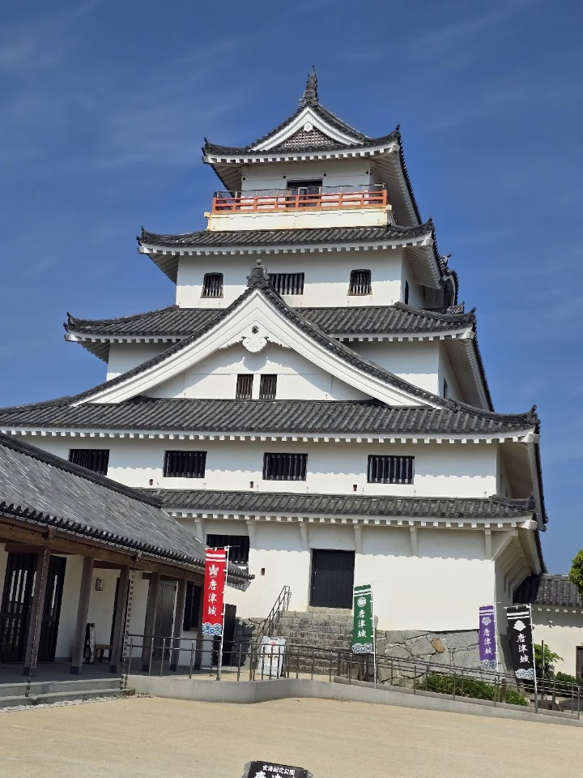
Start: Fukuoka Airport - total driving 3.8 h
Overnight (booked): Sea Style Resort OCEAN (Booking.com): confirmed booking
Drive character: 16% of the distance on expressway-speed roads; terrain: plains, urban, hills, coastal, mountain
- 09:45Leave Fukuoka Airport with the rental car (after landing, immigration, baggage and the car pick-up; the time is an estimate)
- 10:08Dazaifu Tenmangu Shrine (45 min) Parking: 本殿の目の前駐車場 (82 m, 2 min walk).
Dazaifu Tenmangu is a Shinto shrine dedicated to Sugawara no Michizane, a scholar worshipped as the god of learning, so it fills with students praying for exam success. The grounds have a pond crossed by arched bridges, a museum and many plum trees that flower in late winter, and the approach street is lined with stalls selling umegae mochi, the local rice cake.
Wed 2 Dec: 06:00-19:30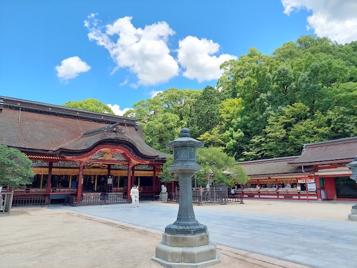
Photo: もりくま (Google Maps) - 10:57Kamado Shrine (20 min) Parking: Homanzan Kamadojin Parking Lot (194 m, 4 min walk).
Kamado Shrine is a serene Shinto shrine tucked into the wooded hills above Dazaifu, with sculptures, quiet walking paths and seasonal foliage. It sees far fewer visitors than the big shrine in town, and your saved note says it has an autumn night illumination that runs until 5 December 2026.
Wed 2 Dec: 08:30-18:00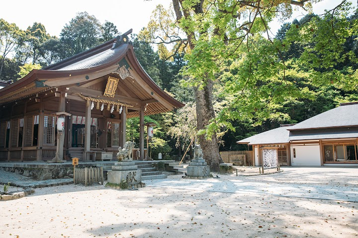
Photo: 宝満宮 竈門神社 (Google Maps) - 🚗Scenic stretch before this stop
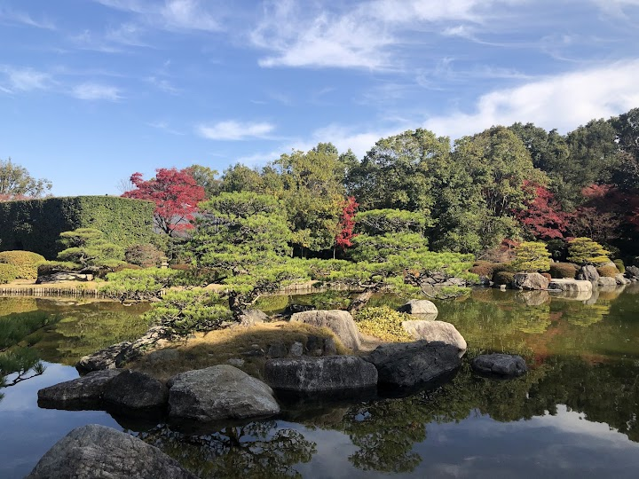
Photo: 望月弘 (Google Maps) - 12:19Sakurai Futamigaura's Couple Stones (15 min) Parking: Parking Lot (201 m, 4 min walk).
Two large rocks joined by a Shinto rope stand in the sea off the Itoshima coast, known as the Couple Rocks, with a white torii gate in the water in front. The sunset views are famous, and the look changes with the tide.
Wed 2 Dec: Open 24 hoursPhoto: Raymond Li (Google Maps) - 13:15Shiraito Waterfall Observation Deck (30 min) Parking: Shiraitonotaki Parking Lot (90 m, 2 min walk).
A viewing platform in the hills of Itoshima that looks down over the Shiraito Falls area and out across the valley. Visitors say that on clear days you can see all the way to the coast, though early-morning mist can hide the view.
Wed 2 Dec: Opening hours not listed on Google (check the official site)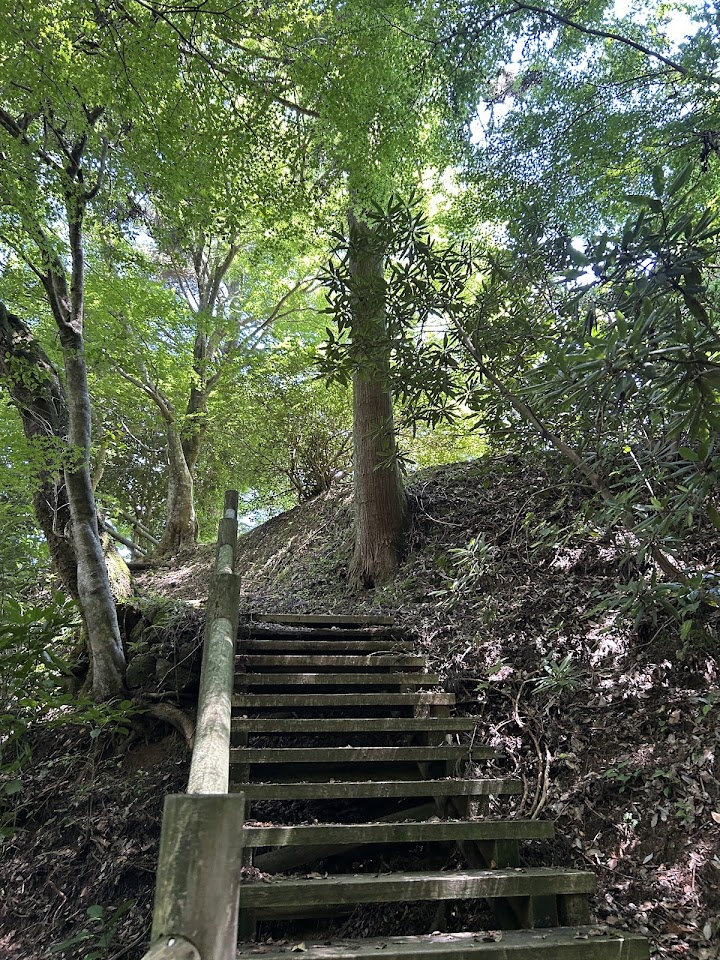
Photo: Nina (Google Maps) - 14:09Senjuin Waterfall (20 min) Parking: Senjuin Notaki Parking Lot (178 m, 3 min walk).
A small, quiet waterfall in the Itoshima hills that few visitors reach. Reviewers describe cool air, clear water and a peaceful setting that makes a good short stop between the bigger sights.
Wed 2 Dec: Open 24 hours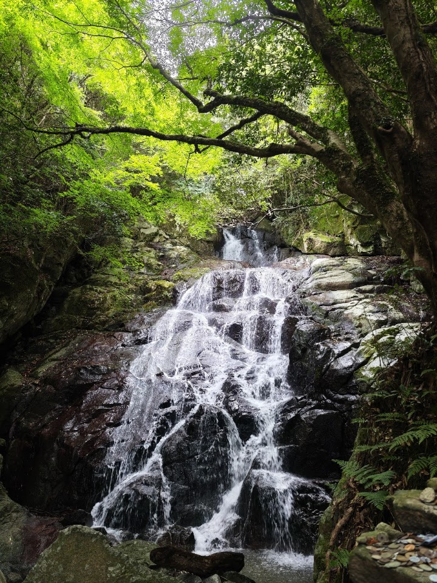
Photo: RunLevo (Google Maps) - 15:07Kannon Falls (45 min) Parking: Parking for Kannon Falls (183 m, 3 min walk).
Kannon Falls is a waterfall in the hills above Karatsu, reached by an easy walking trail from a small car park. Visitors describe an attractive cascade over rock in a forested valley, with a short walk and beautiful scenery.
Wed 2 Dec: 08:30-17:15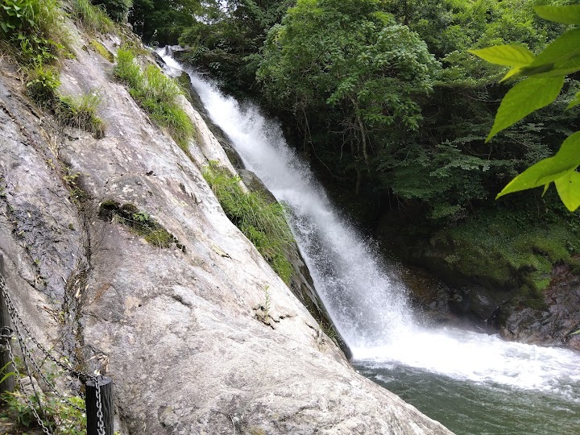
Photo: hiroyuki K (Google Maps) - 🚗Scenic stretch before this stop
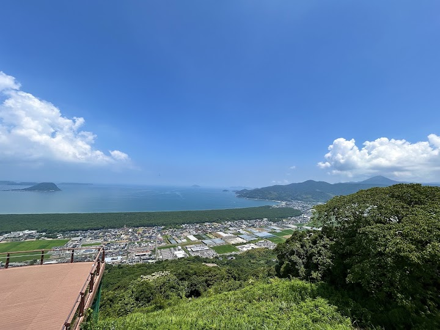
Photo: katsum (Google Maps) - 16:18Karatsu Castle (suggested) (30 min) (check opening hours) Parking: Higashijonai Parking Lot (162 m, 3 min walk).
Karatsu Castle, also called Maizuru (Dancing Crane) Castle, was first completed in 1607 and the keep has been reconstructed. It stands on a hill beside the sea and offers tours of the keep and sweeping views over Karatsu Bay and the pine-lined shore; one visitor says it exceeded their expectations of Japanese castles.
Wed 2 Dec: 09:00-17:00Photo: A I (Google Maps) - 16:57arrive Sea Style Resort OCEAN (overnight)
Details, tickets and notes
Location details (separate file): Kannon Falls: parking pin (Google Maps), about 150 m on foot to the falls.
Sakurai Futamigaura's Couple Stones is a photo stop (the white torii and the two rocks in the sea, Itoshima coast). The tide changes how it looks, so check it before you go. To keep the arrival before sunset with this stop added, the time at Dazaifu (45 min), Kamado (20), Senjuin (20) and Karatsu Castle (30) is shorter than before.
Day 2 - Thu 3 Dec: Mikaerino Falls, Yanagawa, Yame and Kikuchi Gorge
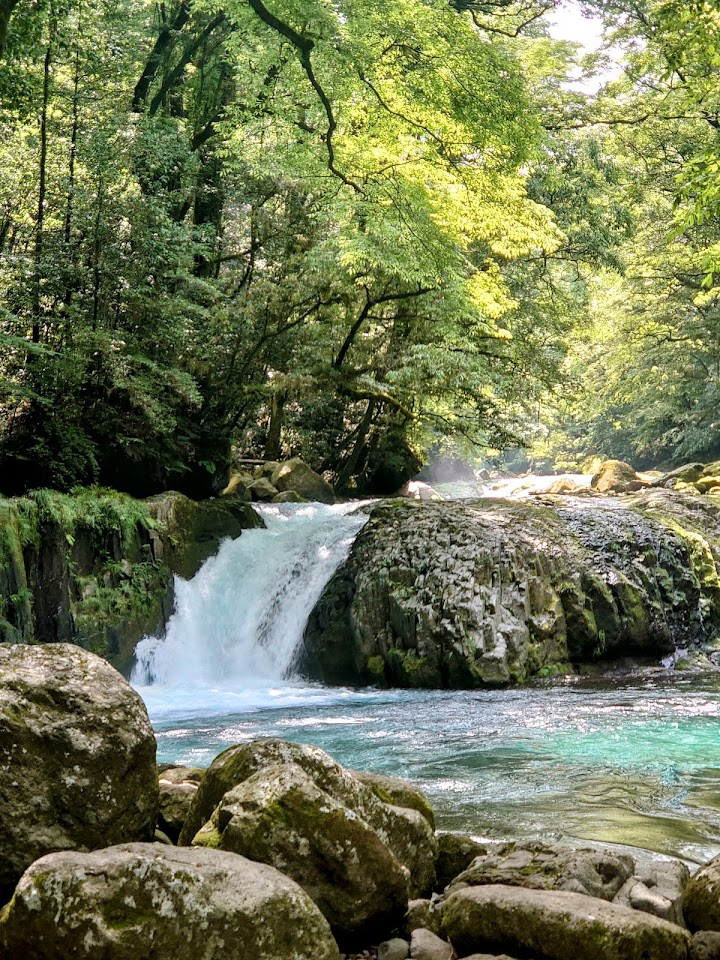
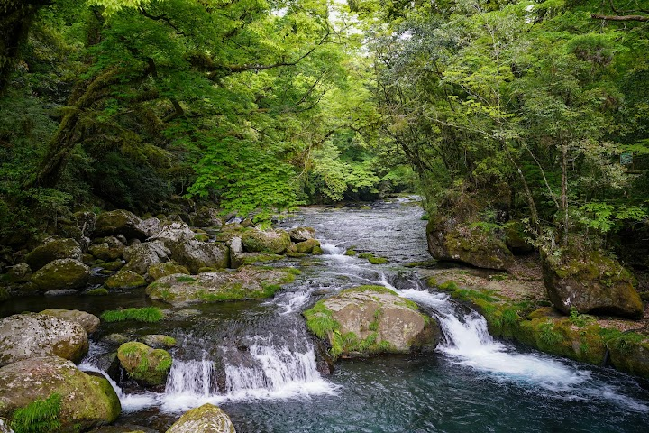
Start: Sea Style Resort OCEAN (overnight) - total driving 5.0 h
Overnight (booked): UNZIPPER KUMAMOTO - Private Sauna Stay: confirmed booking
Drive character: 0% of the distance on expressway-speed roads; terrain: mountain, hills, scenic, on foot
- 08:00Leave Sea Style Resort OCEAN
- 08:25Mikaeri No Taki Falls (60 min) CHECK CONDITIONS Parking: Mikaerino Falls parking lot, signboard map, WC (716 m, 13 min walk).
Mikaeri No Taki is a dramatic waterfall deep in the hills near Karatsu, approached along a riverside trail that is lined with hydrangeas in the rainy season. The path is short but can be slippery, and the cascade drops through thick greenery. Check conditions before you go.
Thu 3 Dec: Open 24 hours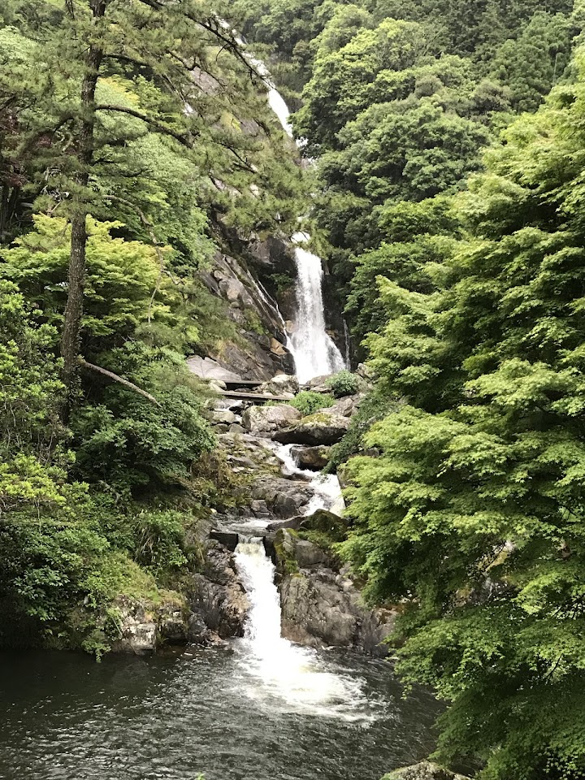
Photo: Rita So (Google Maps) - 10:36Boarding point: Shogetsu Punting Station, Yanagawa canal cruise [BOOK AHEAD (recommended): shared boat 2,200 yen adult; same-day tickets can sell out] (115 min) (check opening hours) Parking: No. 1 free parking, Tachibana St (35 m, 1 min walk) or shrine parking lot (139 m, 3 min walk).
- 13:13八女中央大茶園 Yame Central Tea Plantation (35 min) Parking: none listed within 1.5 km (check on arrival).
A hillside plantation in Yame, one of Japan's best-known tea-growing regions, with rows of tea bushes and a viewpoint over the fields. The roads up to the viewpoint are narrow and need some care when driving.
Thu 3 Dec: Opening hours not listed on Google (check the official site)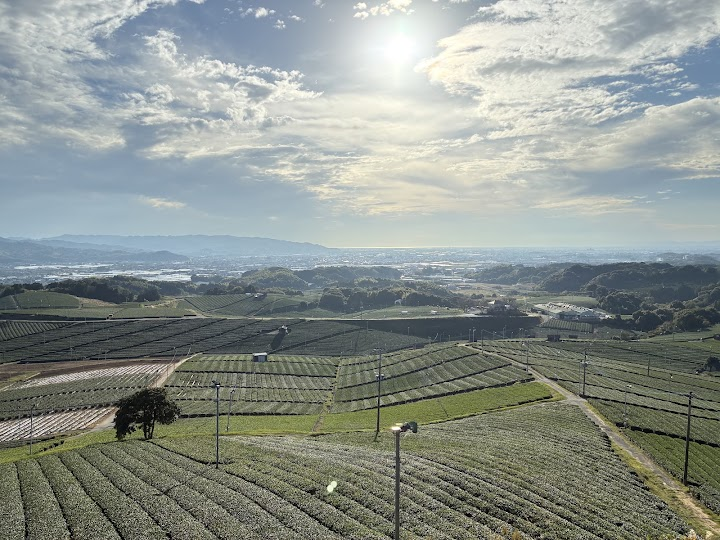
Photo: な8 (Google Maps) - 🚗Scenic stretch before this stop
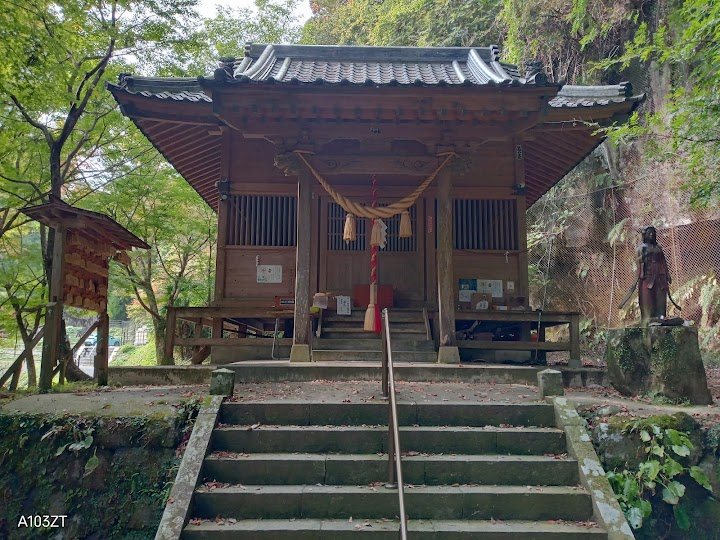
Photo: 1995esc (Google Maps) - 15:13Akaishidani Falls (25 min) CHECK CONDITIONS Parking: Kikuchi Valley No. 1 Parking Lot, paid parking lot (327 m, 6 min walk).
Akaishidani Falls is one of the waterfalls in Kikuchi Valley, where the water drops down several steps in thin white streams that visitors compare to flowing milk. The stream is clear and the air is cool; once you find the path it is a fairly easy walk to the falls.
Thu 3 Dec: Opening hours not listed on Google (check the official site)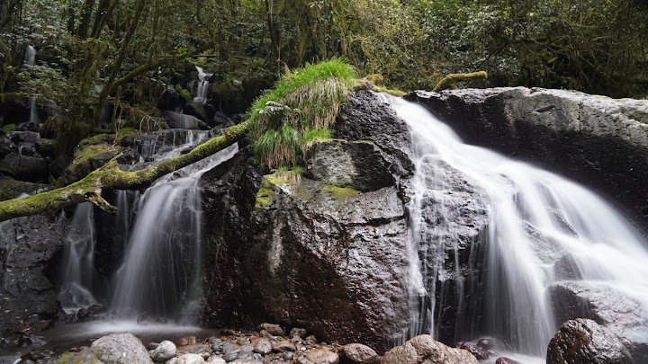
Photo: 山瀧華美 (Google Maps) - 15:38Reimei Waterfall (20 min)
Reimei Waterfall is part of the Kikuchi Valley cluster, with very clean, cold water falling into a clear pool. It is especially pretty with autumn colour, and the paths here are short and mostly flat.
Thu 3 Dec: Open 24 hoursPhoto: La tee (Google Maps) - 15:58Kikuchi Gorge (40 min)
Kikuchi Gorge is a peaceful, forested valley with a river, several waterfalls and nature trails, popular for its cool air and autumn colour. Parking is reported to be free, with an entrance fee of about 500 yen per person (check the current price); allow time for a hike of an hour or two.
Thu 3 Dec: 08:30-17:00Photo: 菊池渓谷 (Google Maps) - 16:38Hirokawara (Kikuchi Valley) (30 min)
Hirokawara is a scenic stretch of Kikuchi Valley where the river widens among rocks and trees, and one visitor called it one of the most beautiful parts of the valley. Rain can cut a visit short, so check the weather.
Thu 3 Dec: Opening hours not listed on Google (check the official site)Photo: Cool Echo (Google Maps) - 18:24arrive UNZIPPER KUMAMOTO - Private Sauna Stay (overnight) :warning: after sunset
Lower-risk alternative - Skip the Yame tea plantation to reach Kikuchi Gorge with more daylight. (driving 4.2 h): Route map
- 08:00Leave Sea Style Resort OCEAN
- 08:25Mikaeri No Taki Falls (60 min) CHECK CONDITIONS Parking: Mikaerino Falls parking lot, signboard map, WC (716 m, 13 min walk).
Mikaeri No Taki is a dramatic waterfall deep in the hills near Karatsu, approached along a riverside trail that is lined with hydrangeas in the rainy season. The path is short but can be slippery, and the cascade drops through thick greenery. Check conditions before you go.
Thu 3 Dec: Open 24 hours - 10:36Boarding point: Shogetsu Punting Station, Yanagawa canal cruise [BOOK AHEAD (recommended): shared boat 2,200 yen adult; same-day tickets can sell out] (115 min) (check opening hours) Parking: No. 1 free parking, Tachibana St (35 m, 1 min walk) or shrine parking lot (139 m, 3 min walk).
- 13:50Akaishidani Falls (25 min) CHECK CONDITIONS Parking: Kikuchi Valley No. 1 Parking Lot, paid parking lot (327 m, 6 min walk).
Akaishidani Falls is one of the waterfalls in Kikuchi Valley, where the water drops down several steps in thin white streams that visitors compare to flowing milk. The stream is clear and the air is cool; once you find the path it is a fairly easy walk to the falls.
Thu 3 Dec: Opening hours not listed on Google (check the official site) - 14:15Reimei Waterfall (20 min)
Reimei Waterfall is part of the Kikuchi Valley cluster, with very clean, cold water falling into a clear pool. It is especially pretty with autumn colour, and the paths here are short and mostly flat.
Thu 3 Dec: Open 24 hours - 14:35Kikuchi Gorge (40 min)
Kikuchi Gorge is a peaceful, forested valley with a river, several waterfalls and nature trails, popular for its cool air and autumn colour. Parking is reported to be free, with an entrance fee of about 500 yen per person (check the current price); allow time for a hike of an hour or two.
Thu 3 Dec: 08:30-17:00 - 15:15Hirokawara (Kikuchi Valley) (30 min)
Hirokawara is a scenic stretch of Kikuchi Valley where the river widens among rocks and trees, and one visitor called it one of the most beautiful parts of the valley. Rain can cut a visit short, so check the weather.
Thu 3 Dec: Opening hours not listed on Google (check the official site) - 17:01arrive UNZIPPER KUMAMOTO - Private Sauna Stay (overnight)
Details, tickets and notes
Location details (separate files): Mikaerino Falls | Yanagawa canal cruise | Kikuchi Gorge cluster
- Mikaerino Falls: parking is 500 yen at the municipal Hotaru-bashi lot (38 spaces, toilets); about 800 m on foot to the falls. Includes a translated guide map and the original Karatsu City PDF.
- Yanagawa canal cruise: shared boats 09:30-15:00 every 30 minutes, about 60 minutes, adults 2,200 yen; book online. Both free parking options are linked on the boarding-point line.
Day 3 - Fri 4 Dec: Kumamoto Castle, Hitoyoshi, Sogi and Ryumon falls to Kagoshima
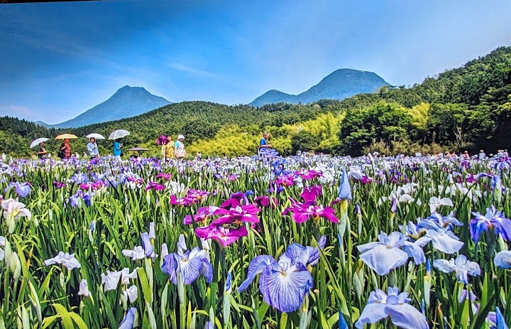
Start: UNZIPPER KUMAMOTO - Private Sauna Stay (overnight) - total driving 4.4 h
Overnight (booked): Art Hotel Kagoshima: confirmed booking
Drive character: 45% of the distance on expressway-speed roads; terrain: plains, urban, mountain, highway
- 08:00Leave UNZIPPER KUMAMOTO - Private Sauna Stay
- 08:07Kumamoto Castle [TICKET at the gate: 800 yen adult; last entry about 16:00-16:30; advance web ticket optional] (90 min) (check opening hours) Parking: Kato Shrine Parking Lot (144 m, 3 min walk).
Kumamoto Castle is a huge hilltop castle first completed in 1607 and one of Japan's most famous. It was badly damaged in the 2016 earthquakes and has been reconstructed, with a history museum in the keep; some of the grounds and gardens are still being restored.
Fri 4 Dec: 09:00-17:00Photo: Ugandan Knuckles (Google Maps) - 09:41Sakuranobaba Josaien tourist information centre (20 min) Parking: 城彩苑 駐車場 (47 m, 1 min walk).
Sakuranobaba Josaien is a complex of shops and restaurants at the foot of Kumamoto Castle, built to look like an old Edo-period street, with a tourist information centre. Visitors use it as a handy starting point for the castle, and for local food and souvenirs.
Fri 4 Dec: 09:00-17:30
Photo: yu-tang tai (Google Maps) - 11:38鹿目の滝 駐車スペース (30 min) CHECK CONDITIONS
A narrow roadside pull-out beside Kanome Falls near Hitoyoshi, which visitors describe as little more than a widened road shoulder. It only fits a few cars and the road is tight here, so avoid blocking it and be ready to park elsewhere.
Fri 4 Dec: Opening hours not listed on Google (check the official site)Photo: 梨木 U助 (Google Maps) - 12:33Cloth Waterfall (30 min) CHECK CONDITIONS Parking: none listed within 1.5 km (check on arrival).
A waterfall near Hitoyoshi that is reached by a turn off Route 267 and a narrow bridge; the signs are small and easy to miss, so use the map pin. A short visit among the hills of southern Kumamoto.
Fri 4 Dec: Open 24 hours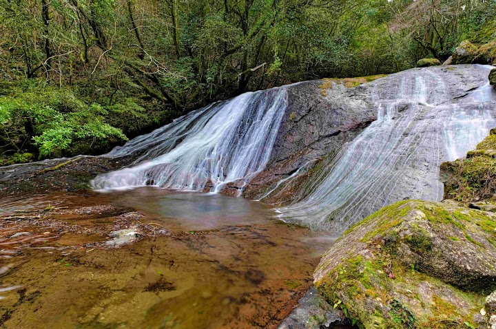
Photo: Tadashi Ogaki (Google Maps) - 13:40Sogi Waterfall. (40 min) CHECK CONDITIONS Parking: Sogi Waterfall 2nd Parking Lot. (179 m, 3 min walk).
Sogi Waterfall is a wide, famous waterfall where a river about 210 metres across drops about 12 metres, creating a broad curtain of water. Visitors enjoy the wildlife and the easy walk, with viewpoints close to the water.
Fri 4 Dec: Open 24 hours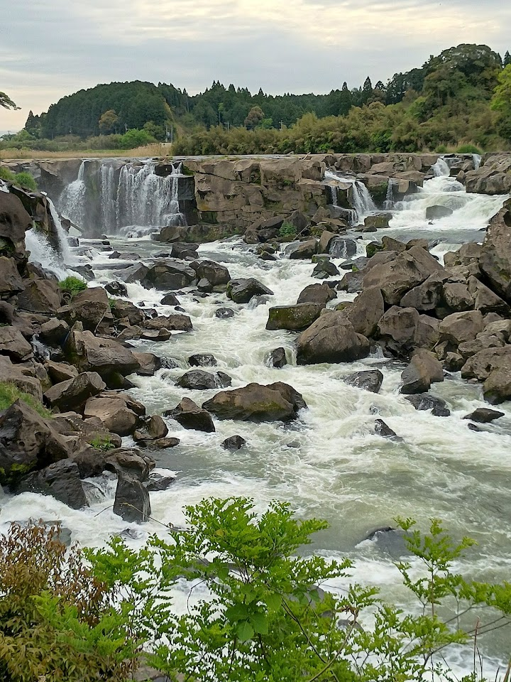
Photo: たかし (Google Maps) - 15:12Ryumon Falls (40 min) CHECK CONDITIONS Parking: Parking lot, Kinzan Bridge (702 m, 13 min walk) or ふれあいパーク加治木駐車場 (764 m, 14 min walk).
Ryumon Falls is a high, wide waterfall in a green valley with walking paths to different viewing points. A visitor warns that the observation deck does not give a view of the falls, so use the path down to the water instead.
Fri 4 Dec: Open 24 hours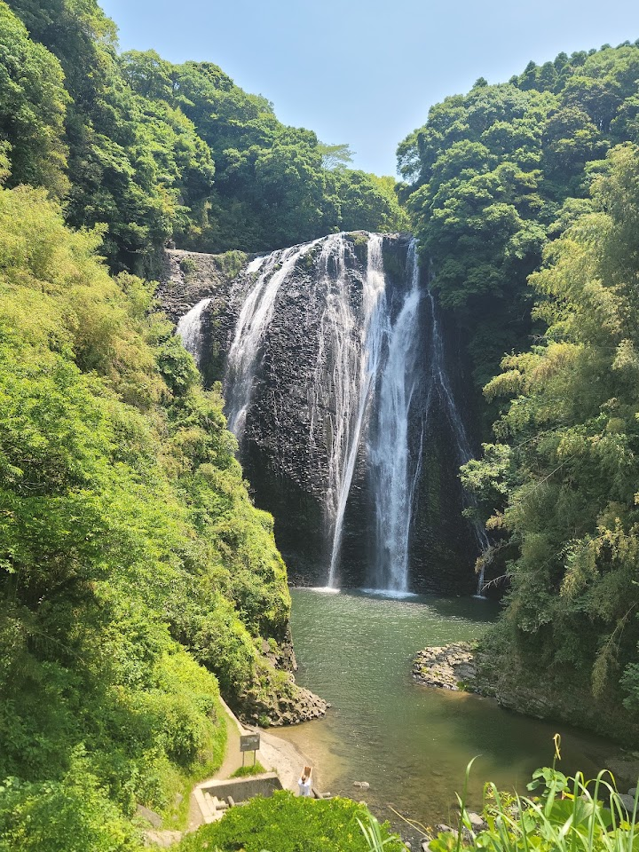
Photo: ぼす。 (Google Maps) - 16:36arrive Art Hotel Kagoshima (overnight)
Lower-risk alternative - Add Zatō Falls (Minamata), which was dropped for time; expect to reach Kagoshima after dark. (driving 5.9 h): Route map
- 08:00Leave UNZIPPER KUMAMOTO - Private Sauna Stay
- 08:07Kumamoto Castle [TICKET at the gate: 800 yen adult; last entry about 16:00-16:30; advance web ticket optional] (90 min) (check opening hours) Parking: Kato Shrine Parking Lot (144 m, 3 min walk).
Kumamoto Castle is a huge hilltop castle first completed in 1607 and one of Japan's most famous. It was badly damaged in the 2016 earthquakes and has been reconstructed, with a history museum in the keep; some of the grounds and gardens are still being restored.
Fri 4 Dec: 09:00-17:00 - 09:41Sakuranobaba Josaien tourist information centre (20 min) Parking: 城彩苑 駐車場 (47 m, 1 min walk).
Sakuranobaba Josaien is a complex of shops and restaurants at the foot of Kumamoto Castle, built to look like an old Edo-period street, with a tourist information centre. Visitors use it as a handy starting point for the castle, and for local food and souvenirs.
Fri 4 Dec: 09:00-17:30 - 11:38鹿目の滝 駐車スペース (30 min) CHECK CONDITIONS
A narrow roadside pull-out beside Kanome Falls near Hitoyoshi, which visitors describe as little more than a widened road shoulder. It only fits a few cars and the road is tight here, so avoid blocking it and be ready to park elsewhere.
Fri 4 Dec: Opening hours not listed on Google (check the official site) - 12:33Cloth Waterfall (30 min) CHECK CONDITIONS Parking: none listed within 1.5 km (check on arrival).
A waterfall near Hitoyoshi that is reached by a turn off Route 267 and a narrow bridge; the signs are small and easy to miss, so use the map pin. A short visit among the hills of southern Kumamoto.
Fri 4 Dec: Open 24 hours - 14:10Zatō Falls (30 min) CHECK CONDITIONS
- 15:36Sogi Waterfall. (40 min) CHECK CONDITIONS Parking: Sogi Waterfall 2nd Parking Lot. (179 m, 3 min walk).
Sogi Waterfall is a wide, famous waterfall where a river about 210 metres across drops about 12 metres, creating a broad curtain of water. Visitors enjoy the wildlife and the easy walk, with viewpoints close to the water.
Fri 4 Dec: Open 24 hours - 17:08Ryumon Falls (40 min) CHECK CONDITIONS Parking: Parking lot, Kinzan Bridge (702 m, 13 min walk) or ふれあいパーク加治木駐車場 (764 m, 14 min walk).
Ryumon Falls is a high, wide waterfall in a green valley with walking paths to different viewing points. A visitor warns that the observation deck does not give a view of the falls, so use the path down to the water instead.
Fri 4 Dec: Open 24 hours - 18:31arrive Art Hotel Kagoshima (overnight) :warning: after sunset
Details, tickets and notes
Location details (separate file): Ryumon Falls cluster: two saved parking lots (Kinzan Bridge and Fureai Park), about 0.7 km on foot to the falls.
Day 4 - Sat 5 Dec: Kagoshima, Sakurajima and on to Nobeoka
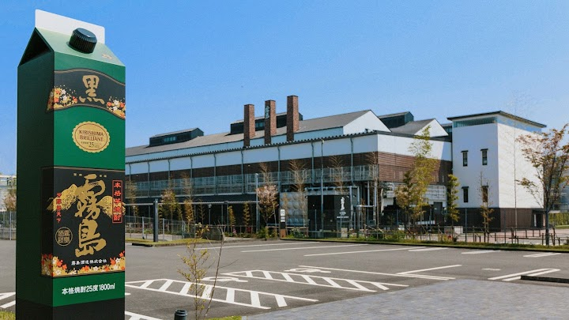
Start: Art Hotel Kagoshima (overnight) - total driving 4.0 h
Overnight (tentative): Hotel Route-Inn Nobeoka Ekimae (1 night, S$140): parking, laundry; no onsen in Nobeoka
Drive character: 51% of the distance on expressway-speed roads; terrain: coastal, scenic, urban, hills, highway
- 08:30Leave Art Hotel Kagoshima
- 08:50Sengan-en (90 min) Parking: Senganen Paid Parking Lot for visitor. (63 m, 1 min walk).
Sengan-en is a traditional Japanese garden and former home of the Shimazu lords of the Satsuma domain, laid out in the 1650s. Its great feature is the view of Sakurajima volcano across Kagoshima Bay, used as borrowed scenery, and there are guided tours of the house.
Sat 5 Dec: 09:00-17:00Photo: Valerie Hemingway (Google Maps) - 10:29Kagoshima ferry terminal (to Sakurajima) (30 min)
- 11:14arrive Sakurajima Port (arrive)
- 11:16Sakurajima Volcanic Shore Park and Footbath (60 min) Parking: 駐車場 (116 m, 2 min walk).
A seafront park beside the Sakurajima Visitor Centre with a free public footbath fed by hot spring water, a hiking trail across old lava fields and a fishing pier. It is a relaxing place to rest your feet while looking at the volcano.
Sat 5 Dec: 09:00-17:30Photo: alex wu (Google Maps) - 12:27Yunohira Observation Deck (60 min) Parking: Yunohira View Point Parking (81 m, 2 min walk).
Yunohira Observation Deck is the highest point on Sakurajima that visitors can reach, about 373 metres up, with panoramic views of lava fields, the wooded slopes of the volcano and Kagoshima Bay. On a clear day the view is excellent.
Sat 5 Dec: Open 24 hoursPhoto: 湯之平展望所 (Google Maps) - 14:56Kirishima Factory Garden (30 min) (check opening hours) Parking: 駐車場 (19 m, 1 min walk).
A large shochu (distilled spirit) distillery that welcomes visitors with a one-hour guided walking tour of the factory, mostly in Japanese. There is a shop and tasting area, which makes it a handy stop on the road to Miyazaki.
Sat 5 Dec: 09:00-21:00Photo: 焼酎の里 霧島ファクトリーガーデン（霧島酒造直営） (Google Maps) - 17:17arrive Route-Inn Nobeoka Ekimae (overnight) :warning: after sunset
Day 5 - Sun 6 Dec: Nobeoka, Cape Hyuga, Takachiho Gorge and on to Aso
Start: Route-Inn Nobeoka Ekimae (overnight) - total driving 5.6 h
Overnight (tentative): Yumeoi-so, Uchinomaki Onsen (Aso) (1 night, S$284): hot spring and open-air bath, kid-friendly buffet, free parking
Drive character: 11% of the distance on expressway-speed roads; terrain: coastal, scenic, mountain
- 06:45Leave Route-Inn Nobeoka Ekimae
- 07:22The Sea Cross Overlook (15 min) CHECK CONDITIONS Parking: Cruz no umi Parking Lot (70 m, 1 min walk).
A small overlook on the Cape Hyuga headland at Hososhima in Hyuga City, looking down on an interesting rock formation and seascape (Google reviewers). A small car park (Cruz no umi Parking Lot) is 70 m away; reviews say it has few spaces. Check conditions in wind or rain.
Sun 6 Dec: Open 24 hoursPhoto: 犬神SAY (Google Maps) - 07:39Umagase Promenade Entrance (30 min) CHECK CONDITIONS Parking: Cape Hyuga Umagase Parking Lot (20 m, 1 min walk).
The start of a walking path along the clifftop of Cape Hyuga, at Hososhima in Hyuga City, with views over the Pacific. A car park (Cape Hyuga Umagase Parking Lot) is right next to the entrance. Check the path is open and not slippery in wind or rain.
Sun 6 Dec: Opening hours not listed on Google (check the official site)Photo: とんちんけん (Google Maps) - 08:09Hososhima Lighthouse (15 min) CHECK CONDITIONS Parking: Cape Hyuga Umagase Parking Lot (133 m, 2 min walk).
A lighthouse at the Hososhima headland, a short walk from the Umagase car park, with views of the coast and the port. Check whether the lighthouse grounds are open to visitors and the opening times, which I could not confirm.
Sun 6 Dec: Open 24 hoursPhoto: TeMusubi (Google Maps) - 08:24Cape Hyuga Observation Deck (20 min) CHECK CONDITIONS Parking: Cape Hyuga Umagase Parking Lot (368 m, 7 min walk).
A viewing deck at Cape Hyuga, a few minutes' walk beyond the lighthouse, looking over the sea cliffs and the Pacific. Dress warmly, as the headland is exposed to wind in December.
Sun 6 Dec: Opening hours not listed on Google (check the official site)Photo: 쿰척 (Google Maps) - 10:15Jokoji Waterfall (20 min) CHECK CONDITIONS Parking: none listed within 1.5 km (check on arrival).
A beautiful waterfall right beside the road, with an extremely clear and deep pool beneath it. It is an easy, quick stop in the hills of the Takachiho area.
Sun 6 Dec: Open 24 hoursPhoto: かー君 (Google Maps) - 11:20Ryūgaiwa Waterfall (20 min) CHECK CONDITIONS Parking: Tatsugaiwanotaki Parking Lot (256 m, 5 min walk).
A waterfall near Takachiho with very impressive falls. A visitor warns that you must park in the dedicated Ryugaiwa car park to reach it and not follow the map pin to the wrong spot.
Sun 6 Dec: Open 24 hoursPhoto: Chris (Google Maps) - 12:06Takachiho Gorge [BOOK AHEAD: rowing-boat booking opens 2 weeks before at 09:00 JST; about 4,100 yen per boat of up to 3 people] (120 min) CHECK CONDITIONS (check opening hours) Parking: 高千穂峡第1御塩井駐車場 (58 m, 1 min walk).
Takachiho Gorge is a river canyon where the Gokase River has cut through sheer basalt cliffs, with waterfalls dropping into the gorge. You can walk along a paved path above it or hire a small rowing boat for a close view of Manai Falls; it is one of Kyushu's most famous scenes, and boats need advance booking.
Sun 6 Dec: 08:30-17:00Photo: Oじん (Google Maps) - 14:55Kamishikimi Kumanoza Shrine (30 min) Parking: 上色見熊野座神社 参拝者駐車場 (350 m, 7 min walk).
A picturesque Shinto shrine and a natural stone arch, reached by a steep, wooded path lined with stone lanterns. Visitors say the climb takes about 20 minutes each way, so allow time and wear good shoes.
Sun 6 Dec: Open 24 hoursPhoto: 橋本博幸 (Google Maps) - 15:51Koga Falls (25 min) Parking: Koganotaki Parking Lot (697 m, 13 min walk). Farther than usual: look for a closer spot.
Koga Falls is a waterfall near Aso reached by a hike of under an hour, with striking views along the way. Check the path conditions before you go.
Sun 6 Dec: Open 24 hoursPhoto: しはんチャンネル (Google Maps) - 16:44Kusasenri Observatory (25 min) CHECK CONDITIONS Parking: 草千里收費停車場 (116 m, 2 min walk).
A scenic overlook above Kusasenri, a wide grassy plain inside the Aso crater, with Mt Naka, an active volcano, behind. The volcanic landscape is unusual and dramatic even in cloud and rain.
Sun 6 Dec: Open 24 hoursPhoto: John Ryan (Google Maps) - 17:38arrive Yumeoi-so, Uchinomaki Onsen (overnight) :warning: after sunset
Lower-risk alternative - Skip Cape Hyuga (the Sea Cross Overlook, Umagase, Hososhima Lighthouse, the observation deck), the remote Jokoji and Ryugaiwa falls and the caldera-rim stop (Kusasenri); the 06:45 start can then relax to 08:00. If Route 218 is closed, approach Takachiho from the Aso side (Route 325) instead; check live road status. (driving 2.5 h): Route map
- 06:45Leave Route-Inn Nobeoka Ekimae
- 07:39Takachiho Gorge [BOOK AHEAD: rowing-boat booking opens 2 weeks before at 09:00 JST; about 4,100 yen per boat of up to 3 people] (120 min) CHECK CONDITIONS (check opening hours) Parking: 高千穂峡第1御塩井駐車場 (58 m, 1 min walk).
Takachiho Gorge is a river canyon where the Gokase River has cut through sheer basalt cliffs, with waterfalls dropping into the gorge. You can walk along a paved path above it or hire a small rowing boat for a close view of Manai Falls; it is one of Kyushu's most famous scenes, and boats need advance booking.
Sun 6 Dec: 08:30-17:00 - 10:28Kamishikimi Kumanoza Shrine (40 min) Parking: 上色見熊野座神社 参拝者駐車場 (350 m, 7 min walk).
A picturesque Shinto shrine and a natural stone arch, reached by a steep, wooded path lined with stone lanterns. Visitors say the climb takes about 20 minutes each way, so allow time and wear good shoes.
Sun 6 Dec: Open 24 hours - 11:34Koga Falls (30 min) Parking: Koganotaki Parking Lot (697 m, 13 min walk). Farther than usual: look for a closer spot.
Koga Falls is a waterfall near Aso reached by a hike of under an hour, with striking views along the way. Check the path conditions before you go.
Sun 6 Dec: Open 24 hours - 12:25arrive Yumeoi-so, Uchinomaki Onsen (overnight)
Details, tickets and notes
- The Sea Cross Overlook is the first stop: it is on the Cape Hyuga headland, about 600 m west of the Umagase car park, and a small car park is right beside it (reviews say it has few spaces; the overlook looks down on a rock formation in the sea).
- Devil's Washboard (Aoshima) was asked for but does not fit this day. It is on your saved list, but Aoshima is south of Miyazaki city: from Cape Hyuga it is about 86 min and 99 km each way (78% expressway, Google Routes, no traffic), and from there Takachiho is about 3 h more. With it the day reaches the Aso hotel at about 20:45 (dark, on mountain roads) and Takachiho Gorge is reached after 15:00. Options: swap it for the falls and Cape Hyuga, give it its own day, or add it to Day 4 on the way from Kagoshima (Day 4 already ends at 17:17, after sunset, so something there would have to go).
Day 6 - Mon 7 Dec: Aso caldera rim, Oguni, the Kokonoe plateau and Yufuin to Beppu
Start: Yumeoi-so, Uchinomaki Onsen (overnight) - total driving 3.3 h
Overnight (tentative): Apartment Hotel YAEZAKI, Beppu (night 1 of 2, S$200 for both nights): hot spring bath, laundry, family rooms, parking
Drive character: 9% of the distance on expressway-speed roads; terrain: mountain, scenic, hills, plains, coastal, urban
- 08:00Leave Yumeoi-so, Uchinomaki Onsen
- 08:25Kabutoiwa Scenic Overlook (30 min) CHECK CONDITIONS Parking: none listed within 1.5 km (check on arrival).
A viewpoint with a panoramic look over the Aso landscape, with a family-run restaurant if you want to eat with the view. It is a quieter alternative to the bigger lookouts.
Mon 7 Dec: Open 24 hoursPhoto: 白うなぎ (Google Maps) - 09:07Daikanbo Lookout (30 min) CHECK CONDITIONS Parking: 大観峰 第1駐車場 (54 m, 1 min walk).
Daikanbo is one of the best-known viewpoints on the rim of the Aso caldera, with a huge view over the caldera floor and its volcanoes. There are good toilets and a small cafe selling coffee and ice cream.
Mon 7 Dec: Opening hours not listed on Google (check the official site)Photo: saurabh arora (Google Maps) - 10:05Nabegataki Falls (45 min) Parking: Nabegadaki Koen Dai 1 Parking Lot (83 m, 2 min walk).
Nabegataki is a wide, curtain-like waterfall reached by a short walk, where you can walk behind the falling water. It is lit up at night, and the surrounding tall trees make it very photogenic.
Mon 7 Dec: 09:00-17:00Photo: JAPAN街街ラボ (Google Maps) - 11:10Meoto Falls (30 min) Parking: 秘境七滝駐車場 (731 m, 14 min walk). Farther than usual: look for a closer spot.
Meoto Falls takes its name from the Japanese word for a married couple, and is a scenic waterfall in the Aso area. One visitor liked it enough to visit twice in a day; check the correct map pin before you set off.
Mon 7 Dec: Open 24 hoursPhoto: なお (Google Maps) - 🚗Scenic stretch before this stop
Photo: tuty hiro (Google Maps) - 12:17Kokonoe Yume Otsuribashi (60 min) CHECK CONDITIONS Parking: Kokonoe Yume Suspension Bridge Parking Lot (253 m, 5 min walk).
Kokonoe Yume Otsuribashi is a pedestrian suspension bridge about 173 metres above the valley (568 feet), open since 2006, with views of waterfalls and forested hills. It feels exposed at first, and the bridge can be closed in strong wind.
Mon 7 Dec: 08:30-17:00Photo: 流浪者旅團 (Google Maps) - 13:17Shindou Falls (30 min) CHECK CONDITIONS Parking: Kokonoe Yume Suspension Bridge Parking Lot (271 m, 5 min walk).
A waterfall in the valley beside the Kokonoe Yume Otsuribashi bridge, seen from the bridge and the walking paths. Check the weather: the bridge can close in high wind.
Mon 7 Dec: Open 24 hoursPhoto: おおたにしんいち (Google Maps) - 13:47Tengu Waterfall (25 min) CHECK CONDITIONS Parking: Kokonoe Yume Suspension Bridge Parking Lot (881 m, 16 min walk). Farther than usual: look for a closer spot.
A small waterfall found at a roadside rest stop with toilets, a cool and pretty place for a short break.
Mon 7 Dec: Open 24 hoursPhoto: Sam Chen (Google Maps) - 14:12Kusuikei (25 min) CHECK CONDITIONS Parking: Kokonoe Yume Suspension Bridge Parking Lot (1066 m, 20 min walk). Farther than usual: look for a closer spot.
Kusuikei is a scenic valley in the Kusu district of Oita with rivers and rock formations, and visitors praise the scenery and the local food. It makes a pleasant stop on the way towards Yufuin.
Mon 7 Dec: Open 24 hoursPhoto: 牧野優太 (Google Maps) - 15:14Lake Kinrin (30 min) Parking: Times Yufuin Lake Kinrin (95 m, 2 min walk).
Lake Kinrin is a small, picturesque lake in Yufuin famous for the morning mist that rises from its warm spring water, and a small shrine stands on its southern shore. It is a lovely place for a stroll, especially in the cold early morning.
Mon 7 Dec: Open 24 hoursPhoto: 李昆鴻 (Google Maps) - 16:22arrive Apartment Hotel YAEZAKI, Beppu (overnight)
Lower-risk alternative - Skip the caldera-rim stops and the Kuju plateau (Yume bridge, Shindou, Tengu, Kusuikei). (driving 2.5 h): Route map
- 08:00Leave Yumeoi-so, Uchinomaki Onsen
- 08:39Nabegataki Falls (45 min) Parking: Nabegadaki Koen Dai 1 Parking Lot (83 m, 2 min walk).
Nabegataki is a wide, curtain-like waterfall reached by a short walk, where you can walk behind the falling water. It is lit up at night, and the surrounding tall trees make it very photogenic.
Mon 7 Dec: 09:00-17:00 - 09:44Meoto Falls (30 min) Parking: 秘境七滝駐車場 (731 m, 14 min walk). Farther than usual: look for a closer spot.
Meoto Falls takes its name from the Japanese word for a married couple, and is a scenic waterfall in the Aso area. One visitor liked it enough to visit twice in a day; check the correct map pin before you set off.
Mon 7 Dec: Open 24 hours - 11:08Lake Kinrin (30 min) Parking: Times Yufuin Lake Kinrin (95 m, 2 min walk).
Lake Kinrin is a small, picturesque lake in Yufuin famous for the morning mist that rises from its warm spring water, and a small shrine stands on its southern shore. It is a lovely place for a stroll, especially in the cold early morning.
Mon 7 Dec: Open 24 hours - 12:16arrive Apartment Hotel YAEZAKI, Beppu (overnight)
Day 7 - Tue 8 Dec: Bungo-ono falls, the Beppu Hells and the Beppu hills (back to Beppu)
Start: Apartment Hotel YAEZAKI, Beppu (overnight) - total driving 3.9 h
Overnight (tentative): Apartment Hotel YAEZAKI, Beppu (night 2 of 2): same hotel as the night before
Drive character: 35% of the distance on expressway-speed roads; terrain: mountain, plains, hills, urban, coastal
- 08:00Leave Apartment Hotel YAEZAKI, Beppu
- 09:07Chinda Falls (40 min) CHECK CONDITIONS Parking: 駐車場 (312 m, 6 min walk).
Chinda Falls is a broad cascade over a river cliff in a forested valley, with remains of an early-1900s power plant beside it. The walk is short and easy.
Tue 8 Dec: Open 24 hoursPhoto: JUN SATO (Google Maps) - 10:02Harajiri Falls (35 min) CHECK CONDITIONS Parking: Harajiri Falls Parking Lot (71 m, 1 min walk).
Harajiri Falls is a large semicircular waterfall that you can view from a wooden suspension bridge, nicknamed the Niagara of the East. It is one of the best-known waterfalls in Oita.
Tue 8 Dec: Open 24 hoursPhoto: 住野清子 (Google Maps) - 10:56Kōmori Falls Observatory (20 min) CHECK CONDITIONS Parking: 第二普光寺駐車場 (940 m, 17 min walk). Farther than usual: look for a closer spot.
A viewing point with a sweeping look over a horseshoe bend in the river and a waterfall, popular with photographers and drone pilots.
Tue 8 Dec: Open 24 hoursPhoto: Sada San (さださん) (Google Maps) - 12:25Kamado Jigoku (40 min) (hells close ~17:00, check) Parking: Oniyama Jigoku Parking Lot (88 m, 2 min walk).
Kamado Jigoku, or Cooking Pot Hell, is one of Beppu's famous geothermal hells, with steaming red and blue pools, a footbath, a gift shop and snacks. The steam is used to cook food, and the park has a lively, theatrical feel.
Tue 8 Dec: 08:00-17:00Photo: TED TAKE (Google Maps) - 13:06Shiraike Jigoku (30 min) (hells close ~17:00, check) Parking: 駐車場 (40 m, 1 min walk).
Shiraike Jigoku, the White Pond Hell, has a steaming hot spring in a manicured traditional garden and a small aquarium. It is the quieter, more serene hell on the walking route.
Tue 8 Dec: 08:00-17:00Photo: Paccho (Google Maps) - 13:41Chinoike Jigoku (30 min) (hells close ~17:00, check) Parking: 駐車場 (124 m, 2 min walk).
Chinoike Jigoku, the Blood Pond Hell, is a steaming thermal pool whose red water gets its colour from iron oxide, with nearby footbaths. It is one of the best-known hells in Beppu.
Tue 8 Dec: 08:00-17:00Photo: arata Sakamoto (Google Maps) - 14:34Shidaka Lake (25 min) Parking: Shidakako Parking Lot (281 m, 5 min walk).
Shidaka Lake is a tranquil mountain lake above Beppu with campgrounds, hiking trails, boat rentals and fishing. It is a nice place to walk or run around the shore and enjoy the view.
Tue 8 Dec: 08:00-17:00Photo: 昭和の人 (Google Maps) - 15:02神楽女湖しょうぶ園 (20 min) Parking: Kaguramekoshobuen Parking Lot (179 m, 3 min walk).
An iris garden beside Lake Kagurame near Beppu, known for its iris flower festival when the weather warms up. In December it is quiet and has no flowers, but the lake and the surroundings are still pleasant.
Tue 8 Dec: 08:30-18:00Photo: ばあばべっぷ (Google Maps) - 15:33Mizunashi Waterfall. (35 min) CHECK CONDITIONS Parking: none listed within 1.5 km (check on arrival).
Mizunashi means without water, and this roadside waterfall earns its name: a visitor found no water flowing when they stopped. It is a very short stop, so check the season before making a detour.
Tue 8 Dec: Opening hours not listed on Google (check the official site)Photo: masa challenge (Google Maps) - 16:27arrive Apartment Hotel YAEZAKI, Beppu (overnight)
Lower-risk alternative - Skip Mizunashi Falls and the iris garden for an earlier finish. (driving 3.7 h): Route map
- 08:00Leave Apartment Hotel YAEZAKI, Beppu
- 09:07Chinda Falls (40 min) CHECK CONDITIONS Parking: 駐車場 (312 m, 6 min walk).
Chinda Falls is a broad cascade over a river cliff in a forested valley, with remains of an early-1900s power plant beside it. The walk is short and easy.
Tue 8 Dec: Open 24 hours - 10:02Harajiri Falls (35 min) CHECK CONDITIONS Parking: Harajiri Falls Parking Lot (71 m, 1 min walk).
Harajiri Falls is a large semicircular waterfall that you can view from a wooden suspension bridge, nicknamed the Niagara of the East. It is one of the best-known waterfalls in Oita.
Tue 8 Dec: Open 24 hours - 10:56Kōmori Falls Observatory (20 min) CHECK CONDITIONS Parking: 第二普光寺駐車場 (940 m, 17 min walk). Farther than usual: look for a closer spot.
A viewing point with a sweeping look over a horseshoe bend in the river and a waterfall, popular with photographers and drone pilots.
Tue 8 Dec: Open 24 hours - 12:25Kamado Jigoku (40 min) (hells close ~17:00, check) Parking: Oniyama Jigoku Parking Lot (88 m, 2 min walk).
Kamado Jigoku, or Cooking Pot Hell, is one of Beppu's famous geothermal hells, with steaming red and blue pools, a footbath, a gift shop and snacks. The steam is used to cook food, and the park has a lively, theatrical feel.
Tue 8 Dec: 08:00-17:00 - 13:06Shiraike Jigoku (30 min) (hells close ~17:00, check) Parking: 駐車場 (40 m, 1 min walk).
Shiraike Jigoku, the White Pond Hell, has a steaming hot spring in a manicured traditional garden and a small aquarium. It is the quieter, more serene hell on the walking route.
Tue 8 Dec: 08:00-17:00 - 13:41Chinoike Jigoku (30 min) (hells close ~17:00, check) Parking: 駐車場 (124 m, 2 min walk).
Chinoike Jigoku, the Blood Pond Hell, is a steaming thermal pool whose red water gets its colour from iron oxide, with nearby footbaths. It is one of the best-known hells in Beppu.
Tue 8 Dec: 08:00-17:00 - 14:34Shidaka Lake (25 min) Parking: Shidakako Parking Lot (281 m, 5 min walk).
Shidaka Lake is a tranquil mountain lake above Beppu with campgrounds, hiking trails, boat rentals and fishing. It is a nice place to walk or run around the shore and enjoy the view.
Tue 8 Dec: 08:00-17:00 - 15:22arrive Apartment Hotel YAEZAKI, Beppu (overnight)
Day 8 - Wed 9 Dec: Usa inland falls, Aonodomon, Yabakei and return the car in Fukuoka
Start: Apartment Hotel YAEZAKI, Beppu (overnight) - total driving 4.1 h
Overnight (tentative): Dream Inn Hakata, Fukuoka (night 1 of 2, S$306 for both nights): laundry, family rooms; you return the car first
Drive character: 34% of the distance on expressway-speed roads; terrain: mountain, hills, plains, scenic, urban
- 08:00Leave Apartment Hotel YAEZAKI, Beppu
- 08:38Higashi Shiiya Falls (35 min) CHECK CONDITIONS Parking: Higashi Shiiya Falls (0 m, 1 min walk).
Higashi Shiiya Falls is an 85-metre-high waterfall surrounded by cliffs in a scenic forest, with hiking trails and a place for swimming in summer. Visitors call it a power spot and note that the path is a little rough in places.
Wed 9 Dec: Open 24 hoursPhoto: キンキラ (Google Maps) - 09:20Susaki Falls Observation Deck (25 min) CHECK CONDITIONS Parking: Border Falls Parking Lot (151 m, 3 min walk).
A roadside pull-out from which you can see a large waterfall in the distance. It is a quick stop for photos rather than a walk.
Wed 9 Dec: Open 24 hoursPhoto: ai ai (Google Maps) - 10:14Amari Falls (40 min) CHECK CONDITIONS Parking: Amari Falls Parking Lot (220 m, 4 min walk).
A hidden waterfall in the wilderness of the Usa area. A visitor notes that the road to the car park is difficult and overgrown with weeds, so it needs care.
Wed 9 Dec: Open 24 hoursPhoto: Yuga Love (Google Maps) - 11:00Yo Shrine (25 min) Parking: Bunjibashitenbo Koen Parking Lot (991 m, 18 min walk). Farther than usual: look for a closer spot.
Yo Shrine (Amari Shrine) is a small, sunny, well-kept Shinto shrine with old plaques over the torii gate and a pair of large, gentle-looking guardian dogs. It is a quiet, peaceful stop on the way between the waterfalls.
Wed 9 Dec: Opening hours not listed on Google (check the official site)Photo: On The Bit (Google Maps) - 🚗Scenic stretch before this stop
Photo: 華 (Google Maps) - 12:02Aonodōmon (40 min) Parking: 青の洞門 無料駐車場（PK-01） (302 m, 6 min walk).
Aonodomon is a tunnel beside the river that a Buddhist monk, Zenkai, hand-carved over about 30 years in the Edo period to make a safe path for travellers. Visitors say to check which entrance is open, because a part was closed for renovation.
Wed 9 Dec: Open 24 hoursPhoto: 青の洞門 (Google Maps) - 13:02Hitome Hakkei Observation Deck (25 min) CHECK CONDITIONS Parking: Shinyabakei Parking Lot (535 m, 10 min walk).
Hitome Hakkei is a forested river valley known for its autumn foliage and mountain views, with an observation deck and hot springs. In December the colour has usually faded, but the view of the valley is still good.
Wed 9 Dec: Open 24 hoursPhoto: 一目八景展望台 (Google Maps) - 13:56Waterfall Jion (35 min) CHECK CONDITIONS Parking: Roadside Station No. 2 Parking Lot, Roadside Station Jion-no-Taki Kusu (73 m, 1 min walk).
Jion Falls is a peaceful two-tiered waterfall in a lush valley with room to walk behind the water. It is easy to reach, with parking and toilets, and pretty with autumn colour.
Wed 9 Dec: Open 24 hoursPhoto: ossan ossan (ossanossan) (Google Maps) - 15:50arrive Fukuoka Hakata (return car / overnight)
Lower-risk alternative - Skip Waterfall Jion and the inland Susaki Falls for an earlier return. (driving 3.7 h): Route map
- 08:00Leave Apartment Hotel YAEZAKI, Beppu
- 08:38Higashi Shiiya Falls (35 min) CHECK CONDITIONS Parking: Higashi Shiiya Falls (0 m, 1 min walk).
Higashi Shiiya Falls is an 85-metre-high waterfall surrounded by cliffs in a scenic forest, with hiking trails and a place for swimming in summer. Visitors call it a power spot and note that the path is a little rough in places.
Wed 9 Dec: Open 24 hours - 09:40Amari Falls (40 min) CHECK CONDITIONS Parking: Amari Falls Parking Lot (220 m, 4 min walk).
A hidden waterfall in the wilderness of the Usa area. A visitor notes that the road to the car park is difficult and overgrown with weeds, so it needs care.
Wed 9 Dec: Open 24 hours - 10:26Yo Shrine (25 min) Parking: Bunjibashitenbo Koen Parking Lot (991 m, 18 min walk). Farther than usual: look for a closer spot.
Yo Shrine (Amari Shrine) is a small, sunny, well-kept Shinto shrine with old plaques over the torii gate and a pair of large, gentle-looking guardian dogs. It is a quiet, peaceful stop on the way between the waterfalls.
Wed 9 Dec: Opening hours not listed on Google (check the official site) - 11:28Aonodōmon (40 min) Parking: 青の洞門 無料駐車場（PK-01） (302 m, 6 min walk).
Aonodomon is a tunnel beside the river that a Buddhist monk, Zenkai, hand-carved over about 30 years in the Edo period to make a safe path for travellers. Visitors say to check which entrance is open, because a part was closed for renovation.
Wed 9 Dec: Open 24 hours - 12:28Hitome Hakkei Observation Deck (25 min) CHECK CONDITIONS Parking: Shinyabakei Parking Lot (535 m, 10 min walk).
Hitome Hakkei is a forested river valley known for its autumn foliage and mountain views, with an observation deck and hot springs. In December the colour has usually faded, but the view of the valley is still good.
Wed 9 Dec: Open 24 hours - 14:25arrive Fukuoka Hakata (return car / overnight)
Day 9 - Thu 10 Dec: Fukuoka city on foot and by train (no car)
Start: Hakata Station: subway Airport Line toward Tojinmachi (every ~3 min)
Overnight (tentative): Dream Inn Hakata, Fukuoka (night 2 of 2): same hotel; early train on the 11th
Route links (public transport, one per hop):
- Hakata Station: subway Airport Line toward Tojinmachi (every ~3 min) -> Kuromon Rojiura Bakery (Tojinmachi, closed Tuesdays)
- Kuromon Rojiura Bakery (Tojinmachi, closed Tuesdays) -> Tenjin Underground Mall (Tenjin Chikagai, shops 10:00-20:00)
- Tenjin Underground Mall (Tenjin Chikagai, shops 10:00-20:00) -> Kawabata Shopping Arcade
- Kawabata Shopping Arcade -> Kushida Shrine
- Kushida Shrine -> Hakata Station: JR Kagoshima Line to Takeshita (4 min, every ~10 min)
- Hakata Station: JR Kagoshima Line to Takeshita (4 min, every ~10 min) -> Takeshita Station (arrive; 9 min walk to LaLaport)
- Takeshita Station (arrive; 9 min walk to LaLaport) -> Life-Size RX-93ff 𝛎 Gundam Statue
- Life-Size RX-93ff 𝛎 Gundam Statue -> Takeshita Station (return: JR to Hakata)
- Takeshita Station (return: JR to Hakata) -> Hakata Station (return: walk 15 min to Canal City)
- Hakata Station (return: walk 15 min to Canal City) -> Canal City Hakata (winter illumination after dark)
- Canal City Hakata (winter illumination after dark) -> Nakasu Yatai (open-air food stalls, izakaya street)
- Nakasu Yatai (open-air food stalls, izakaya street) -> Dream Inn Hakata (hotel, overnight)
- 08:50Leave Fukuoka Hakata for Hakata Station (a short walk to the station; an estimate)
- 09:17Kuromon Rojiura Bakery (Tojinmachi, closed Tuesdays) (40 min) (check opening hours)
A popular Fukuoka bakery in an old Japanese house, known for a wide variety of breads made with a long, low-temperature fermentation, plus desserts and coffee. It is a 3-minute walk from Tojinmachi Station exit 6; check the opening hours, which vary between sources.
Thu 10 Dec: 08:30-18:00Photo: ともこ“Tomoko” (Google Maps) - 10:13
- 11:37
- 12:31Kushida Shrine (35 min)
Kushida Shrine, founded in 757 CE, is a Shinto shrine in the middle of Hakata and the centre of the Hakata Gion Yamakasa festival each July, whose huge floats are displayed here. Entry is free and it is easy to stop in while exploring the city.
Thu 10 Dec: 09:00-17:00Photo: Nattarat Juntien (Google Maps) - 13:20arrive Hakata Station: JR Kagoshima Line to Takeshita (4 min, every ~10 min)
- 13:24arrive Takeshita Station (arrive; 9 min walk to LaLaport)
- 13:33Life-Size RX-93ff 𝛎 Gundam Statue (120 min)
A life-size statue of the RX-93ff Nu Gundam from the Mobile Suit Gundam anime stands about 24.8 metres tall at the entrance of LaLaport Fukuoka. Fans call it surreal in person, and it is a good place for photos; one source says it is lit with projections in the evening.
Thu 10 Dec: Open 24 hoursPhoto: San Kwak (Google Maps) - 15:42arrive Takeshita Station (return: JR to Hakata)
- 15:50arrive Hakata Station (return: walk 15 min to Canal City)
- 16:05Canal City Hakata (winter illumination after dark) (120 min) (check opening hours)
Canal City is a sprawling shopping and entertainment complex built around an artificial canal, with brand-name and specialty shops, dining and fountain shows. It hosts a winter illumination each year; last season it ran from mid-November to the end of February (confirm the 2026 dates).
Thu 10 Dec: 10:00-21:00Photo: キャナルシティ博多 (Google Maps) - 18:11Nakasu Yatai (open-air food stalls, izakaya street) (120 min) (check opening hours)
A row of small open-air food stalls (yatai) along the Naka River, Fukuoka's classic izakaya street, serving yakitori, oden, ramen and more from the evening. Most stalls seat only a handful of people, so go early.
Thu 10 Dec: 18:00-03:00 (next day), until 03:00 (opened the evening before)Photo: The POD (Google Maps) - 20:33arrive Dream Inn Hakata (hotel, overnight)
Details, tickets and notes
Optional guided tour (not booked): Fukuoka half-day private walking tour (Klook). Listing. Details are from search listings only: I could not open the page, so price, child price, start time, language and cancellation terms are not verified: it is described as a private 4-hour walking tour with a local guide covering Ohori Park, Fukuoka Tower and the yatai food stalls; one price tier showed US$79.59; rated 4.9 from 9 reviews. Check the price (including the child price for your 11-year-old), start time, language, cancellation terms and the latest booking time for Thu 10 Dec. Fit: Day 9 is already on foot, so this would replace or guide part of the walk. Planning date to decide and book by: Thu 3 Dec (my choice, a week before; check the cut-off on the listing).
Why this order: the bakery is the furthest west (Tojinmachi) and opens at 8:30, so you ride out there first and work back east: bakery, Tenjin Underground Mall (opens 10:00), Kawabata arcade and Kushida Shrine (next to each other), then a trip south-east to the Gundam statue at LaLaport in the early afternoon, and back to Canal City for the winter lights after dark (sunset is about 17:15), then the Nakasu yatai stalls a 5-minute walk away, and the subway back to the hotel.
Train and bus routes (timetable checked for Thu 10 Dec 2026, Oct 2026 data): Fukuoka subway Airport Line, Hakata to Tojinmachi 13 minutes, 260 yen (trains about every 3 minutes, e.g. 09:00, 09:03, 09:06); Tojinmachi to Tenjin 5 to 7 minutes, 210 yen; Tenjin to Nakasu-Kawabata 2 minutes, 210 yen; Nakasu-Kawabata to Hakata 4 minutes, 210 yen. JR Kagoshima Line, Hakata to Takeshita 4 minutes, 200 yen (13:43, 14:01 and about every 10 minutes). A Nishitetsu bus (route 48) from Hakata to Takeshita also exists but takes 25 minutes. IC cards (Suica, ICOCA, Pasmo and others) work on the subway, JR and buses. Walking legs are my estimates from the map distance.
- Rojiura Bakery Kuromon: 4-23 Kuromon, Chuo Ward; Google lists 8:30 to 18:00 on Thursday; it is closed on Tuesdays (Thursday is fine), and one source gives 17:00 as the last eat-in time. It is a 3-minute walk from Tojinmachi Station exit 6, in an old house. Hours conflict between sources, so check before you go.
- Tenjin Underground Mall (Tenjin Chikagai): shops 10:00 to 20:00, restaurants to about 21:00 (varies by shop).
- Kawabata Shopping Arcade (Google: 9:00 to 18:00, some shops differ) and Kushida Shrine (free; the shrine grounds are open from early morning to about 22:00 per two sources; Google lists 9:00 to 17:00 for the office and hall). The shrine is about a 4-minute walk from the arcade.
- Gundam statue: the life-size RX-93ff Nu Gundam (24.8 m) stands at the main entrance of LaLaport Fukuoka (10:00 to 21:00; restaurants and food court 11:00 to 22:00). From Takeshita Station it is about a 9-minute walk, or a short bus ride; there is also a direct Nishitetsu bus from Nishitetsu Ohashi Station (about every 15 minutes, 220 yen, about 10 minutes). One source says the statue is lit with projections every half hour from 19:00 to 21:00 (I could not confirm this). Viewing the statue from the plaza is probably free; Gundam Park inside may charge, so check LaLaport's page. Gundam Base Fukuoka (the model shop at Canal City, 1F South Building) is not a separate stop; pop in while you are at Canal City if you like.
- Canal City winter illumination: last season it ran from 13 Nov 2025 to 28 Feb 2026 (the 2026-27 dates and fountain show times were not published when I checked), so expect it to be on in December, but confirm on the Canal City website. Canal City itself is open 10:00 to 21:00. Other lights around Hakata Station and Tenjin run in the evenings.
- Nakasu yatai (open-air stalls): this is Fukuoka's classic izakaya street, a row of small stalls along the Naka river with yakitori, oden, ramen and more. Google lists 18:00 to 00:30 on Thursday; hours vary by stall, season and weather, and some stalls close on Sundays. In winter the stalls hang vinyl curtains against the cold. Most stalls seat only 6 to 8 people, often cash only, and they fill up from about 19:30, so go early (arrive about 18:00 to 18:30). With an 11-year-old, check that the stall is happy to seat children (many are, early in the evening). Tenjin and Nagahama also have yatai.
If the day is too long: drop the Tenjin Underground Mall (it is a shopping arcade) or cut the time at LaLaport to an hour.
Day 10 - Fri 11 Dec: Shinkansen to Hiroshima, then on to Osaka
Start: Hakata Station: board Nozomi 6 at 07:15 [BOOK AHEAD: Shinkansen reserved seat; on sale about 1 month before]
Overnight (tentative): Minn Umeda North, Osaka (night 1 of 7, S$1,174 for 7 nights): washing machine not listed on Booking; check
Route links (public transport, one per hop):
- Hakata Station: board Nozomi 6 at 07:15 -> Hiroshima Station (Shinkansen arrive, coin lockers)
- Hiroshima Station (Shinkansen arrive, coin lockers) -> Hiroshima Orizuru Tower
- Hiroshima Orizuru Tower -> Atomic Bomb Dome
- Atomic Bomb Dome -> Lunch and free time (see options)
- Lunch and free time (see options) -> Hiroshima Peace Memorial Museum
- Hiroshima Peace Memorial Museum -> Hiroshima Station area (free time, early dinner)
- Hiroshima Station area (free time, early dinner) -> Hiroshima Station (Shinkansen to Osaka)
- Hiroshima Station (Shinkansen to Osaka) -> Minn Umeda-North (Osaka, overnight)
- 06:45Leave Dream Inn Hakata for Hakata Station (about 30 min before the 07:15 departure or pick-up, to walk, buy a drink and find the platform; an estimate)
- 08:21Hiroshima Station (Shinkansen arrive, coin lockers) (20 min)
- 09:06
- 09:54Atomic Bomb Dome (30 min)
The Atomic Bomb Dome, in Hiroshima, is the preserved ruin of the Industrial Promotion Hall, one of the few buildings left standing near the hypocentre of the atomic bomb on 6 August 1945. It is a UNESCO World Heritage Site and a powerful, sobering place to visit.
Fri 11 Dec: Open 24 hoursPhoto: B Miller (Google Maps) - 10:29Lunch and free time (see options) (120 min)
- 12:32Hiroshima Peace Memorial Museum (100 min)
The Hiroshima Peace Memorial Museum documents the atomic bombing through exhibits, artefacts and personal stories. It can be crowded and emotionally heavy, so give it time; parts are not suitable for very young children, so consider your 11-year-old.
Fri 11 Dec: 07:30-19:00Photo: Junior dos Reis (Google Maps) - 14:37Hiroshima Station area (free time, early dinner) (154 min)
- 17:16Hiroshima Station (Shinkansen to Osaka) [BOOK AHEAD: Sakura 762 (17:33) reserved seat; on sale about 1 month before] (17 min)
- 19:29arrive Minn Umeda-North (Osaka, overnight)
Details, tickets and notes
Train times (verified, Oct 2026): Hakata to Hiroshima to Osaka timetable. Morning: Nozomi 6, 07:15 to 08:21. Evening: Sakura 762, 17:33 to 18:59. Reserve both Shinkansen seats.
Optional guided tour (not booked): half-day Atomic Bomb Dome historical tour on Klook. Listing. Klook was not reachable from my tools, so I have not verified its price, duration, start time, language, child rules or cancellation terms: open the listing, pick Fri 11 Dec and read them before booking. If you take it, it replaces or guides the walk to the Orizuru Tower, the Dome and the Peace Memorial Museum, and its start time decides the morning (you arrive 08:21; the Shinkansen home is 17:33, so leave at least 2 hours of margin). Planning date to decide and book by: Fri 4 Dec (my choice, not Klook's cut-off: it leaves time to pick another option if the date is sold out; check the cut-off shown when you choose the date).
Day 11 - Sat 12 Dec: Osaka city (Osaka Castle, Dotonbori, Shinsekai)
Start: Minn Umeda-North (Osaka hotel)
Overnight (tentative): Minn Umeda North, Osaka (night 2 of 7)
Route links (public transport, one per hop):
- 09:00Leave Minn Umeda-North
- 09:30Osaka Castle (90 min)
Osaka Castle is a famous castle dating to 1597 and since rebuilt, standing in large grounds with moats, stone walls and gardens. The main keep holds a museum with varied exhibits and an observation deck, and the park around it is lovely for a walk.
Sat 12 Dec: 09:00-18:00Photo: Wayman HO (Google Maps) - 11:35Dotonbori (60 min)
Dotonbori is the lively canal-side entertainment street at the heart of Osaka, known for its huge illuminated billboards, including the Glico running man, plus restaurants and street food. It is at its best after dark.
Sat 12 Dec: Open 24 hoursPhoto: Chawin OMFS (Google Maps) - 13:00Shinsekai and Tsutenkaku Tower (suggested) (90 min)
Shinsekai is a retro district famous for its neon lights and kushikatsu restaurants, centred on Tsutenkaku Tower, which has an observation deck open to the public. It has a lively, old-fashioned Osaka atmosphere.
Sat 12 Dec: 09:00-21:45Photo: Savoir Aimer (Admin) (Google Maps) - 15:05arrive Minn Umeda-North (Osaka hotel)
Details, tickets and notes
Optional guided tour (not booked): Osaka Shinsekai daytime street-food tour (Accessible Japan). Listing. Details are from search listings only: I could not open the page, so price, child price, start time, language and cancellation terms are not verified: it is described as about 3 hours; kushikatsu, takoyaki and kasu udon; described as suitable for families; English-speaking guide, 2 drinks and a local lunch at a traditional restaurant included. Check the price (including the child price for your 11-year-old), start time, language, cancellation terms and the latest booking time for Sat 12 Dec. Fit: Day 11 already visits Shinsekai, so this would replace the lunch and the Shinsekai walk. Planning date to decide and book by: Sat 5 Dec (my choice, a week before; check the cut-off on the listing).
Day 12 - Sun 13 Dec: Kobe, with the Mt Rokko night view


Start: Minn Umeda-North (Osaka hotel)
Overnight (tentative): Minn Umeda North, Osaka (night 3 of 7): late return after the Rokko night view
Route links (public transport, one per hop):
- Minn Umeda-North (Osaka hotel) -> Nunobiki Falls - Ontaki
- Nunobiki Falls - Ontaki -> Nunobiki Herb Gardens and Ropeway (suggested)
- Nunobiki Herb Gardens and Ropeway (suggested) -> Kitano Ijinkan-gai (suggested)
- Kitano Ijinkan-gai (suggested) -> Nankinmachi Chinatown (suggested)
- Nankinmachi Chinatown (suggested) -> Kobe Port Tower and Harborland (suggested)
- Kobe Port Tower and Harborland (suggested) -> Mt Rokko night view, Tenran-dai at Rokko Sanjo Station (suggested)
- Mt Rokko night view, Tenran-dai at Rokko Sanjo Station (suggested) -> Minn Umeda-North (Osaka hotel)
- 09:00Leave Minn Umeda-North
- 09:50Nunobiki Falls - Ontaki (75 min)
Ontaki is one of the Nunobiki waterfalls in the hills behind Kobe, reached on a hiking trail from Shin-Kobe Station with views over the city and harbour from nearby ridges. Follow the signs from the station, and allow time for the walk.
Sun 13 Dec: Open 24 hoursPhoto: K (Google Maps) - 11:24Nunobiki Herb Gardens and Ropeway (suggested) (75 min)
Nunobiki Herb Gardens is a big hillside botanical garden above Kobe with themed areas of flowers and herbs, restaurants and a gift shop, reached by a ropeway from Shin-Kobe Station with views of the city and port.
Sun 13 Dec: 09:30-20:15Photo: K (Google Maps) - 12:50Kitano Ijinkan-gai (suggested) (90 min)
Kitano Ijinkan-gai is a scenic hillside district of Western-style homes built by foreign merchants and diplomats after Kobe's port opened. Several of the houses can be visited, and the streets give a pleasant view over the city.
Sun 13 Dec: 09:00-17:00Photo: belle Liao (Google Maps) - 14:43Nankinmachi Chinatown (suggested) (45 min)
Nankinmachi is Kobe's Chinatown, established in 1868, with eateries, souvenir shops, mahjong clubs and lively street food stalls. It is a fun place to stroll and graze.
Sun 13 Dec: Open 24 hoursPhoto: Yuhng Yeap (Google Maps) - 15:42Kobe Port Tower and Harborland (suggested) (60 min)
Kobe Port Tower is a 108-metre red steel tower on the harbour with an observation deck giving panoramic views of the city, and it looks especially impressive lit at night. Harborland beside it has shops, restaurants and waterfront promenades.
Sun 13 Dec: 10:00-21:00Photo: Tien Dat Le (Google Maps) - 17:42Mt Rokko night view, Tenran-dai at Rokko Sanjo Station (suggested) [TICKET at the cable car: check the last ride time] (90 min) (check opening hours)
- 20:42arrive Minn Umeda-North (Osaka hotel)
Details, tickets and notes
Optional guided tour (not booked): Kobe private half-day walking tour (Klook). Listing. Details are from search listings only: I could not open the page, so price, child price, start time, language and cancellation terms are not verified: it is described as a private half-day walking tour with an English-speaking guide covering Sannomiya, Kitano (with an Ijinkan museum visit), Nankinmachi and Harborland; the price is shown in local currency and was not captured. Check the price (including the child price for your 11-year-old), start time, language, cancellation terms and the latest booking time for Sun 13 Dec. Fit: it covers the same Kitano and Nankinmachi stops as Day 12, so keep the evening for the Mt Rokko night view. Planning date to decide and book by: Sun 6 Dec (my choice, a week before; check the cut-off on the listing).
Train times (verified, Oct 2026): Osaka day-trip timetables (see the section for this day).
Day 13 - Mon 14 Dec: Universal Studios Japan


Start: Minn Umeda-North (Osaka hotel): JR to Universal City Station
Overnight (tentative): Minn Umeda North, Osaka (night 4 of 7)
Route links (public transport, one per hop):
- Minn Umeda-North (Osaka hotel): JR to Universal City Station -> Universal Studios Japan Arch Gate (security and entry; park opens about 09:00)
- Universal Studios Japan Arch Gate (security and entry; park opens about 09:00) -> Donkey Kong Country: Mine Cart Madness
- Donkey Kong Country: Mine Cart Madness -> Mario Kart: Koopa's Challenge
- Mario Kart: Koopa's Challenge -> Yoshi's Adventure
- Yoshi's Adventure -> Harry Potter and the Forbidden Journey
- Harry Potter and the Forbidden Journey -> Flight of the Hippogriff
- Flight of the Hippogriff -> Ollivanders wand shop
- Ollivanders wand shop -> WaterWorld (live stunt show; check show times)
- WaterWorld (live stunt show; check show times) -> Jurassic Park: The Ride (you get wet)
- Jurassic Park: The Ride (you get wet) -> Despicable Me: Minion Mayhem
- Despicable Me: Minion Mayhem -> Illumination's Villain-Con Minion Blast
- Illumination's Villain-Con Minion Blast -> Jaws
- Jaws -> Space Fantasy: The Ride (check: shown as temporarily closed)
- Space Fantasy: The Ride (check: shown as temporarily closed) -> Bubba Gump Shrimp Co. (Universal CityWalk Osaka, outside the park, dinner)
- Bubba Gump Shrimp Co. (Universal CityWalk Osaka, outside the park, dinner) -> Minn Umeda-North (Osaka hotel)
- 07:50Leave Minn Umeda-North (JR to Universal City Station)
- 08:20Universal Studios Japan Arch Gate (security and entry; park opens about 09:00) [BOOK AHEAD: dated Studio Pass (required for visits from 1 Sep) plus a Super Nintendo World timed-entry ticket] (40 min)
The main entrance of Universal Studios Japan, the Osaka theme park with Hollywood-movie areas, Super Nintendo World, the Wizarding World of Harry Potter and Minion Park. Queue for security and entry here, and have your tickets and timed entry ready.
Mon 14 Dec: 09:00-21:00Photo: Chih-Wei Huang (Google Maps) - 09:15Donkey Kong Country: Mine Cart Madness (90 min) (check opening hours)
Mine Cart Madness is a coaster-style ride in the Donkey Kong Country area of Super Nintendo World, which opened in late 2024. It is the park's biggest bottleneck, with very long waits reported, and it may close in rain or wind.
Mon 14 Dec: 08:00-22:00Photo: chelsea ncis (Google Maps) - 10:49Mario Kart: Koopa's Challenge (60 min) (check opening hours)
Koopa's Challenge is the Mario Kart ride in Super Nintendo World, where you race in a kart wearing a headset through a mix of real sets and augmented reality. The queue itself winds through Bowser's Castle and is part of the attraction; a single-rider line can be much shorter.
Mon 14 Dec: 08:00-22:00Photo: Yoichi MUNEKATA (Google Maps) - 11:53Yoshi's Adventure (25 min) (check opening hours)
Yoshi's Adventure is a gentle ride in Super Nintendo World where you ride on Yoshi's back through a colourful landscape. It is the mildest of the area's rides and good for all ages.
Mon 14 Dec: 08:00-22:00Photo: toshiorange (Google Maps) - 12:26Harry Potter and the Forbidden Journey (75 min) (check opening hours)
The Forbidden Journey is the headline dark ride of the Wizarding World of Harry Potter, boarding inside Hogwarts Castle, with animatronics, effects and a flight over the grounds. The queue winds through the castle rooms and is half the experience; it can be 90 minutes without an Express Pass.
Mon 14 Dec: 09:00-19:30Photo: 周小語 (Google Maps) - 13:44Flight of the Hippogriff (30 min) (check opening hours)
A short, gentle family roller coaster in the Wizarding World that follows Buckbeak the hippogriff around Hagrid's hut. It is aimed at younger riders, so keep it for a spare moment.
Mon 14 Dec: 09:00-19:30Photo: Neil - The Backpack Adventures (Google Maps) - 14:18Ollivanders wand shop (30 min) (check opening hours)
Ollivanders is the wand shop in Hogsmeade where a wand can choose its owner in a short show for small groups, or you can simply buy a wand at the counter. It is a paid experience and the shop is small, so expect a queue.
Mon 14 Dec: 09:00-21:20Photo: Oh Aki (Google Maps) - 14:56WaterWorld (live stunt show; check show times) (40 min) (check opening hours)
WaterWorld is a live stunt show with explosions, fire, jet skis and a seaplane crash, based on the film. It runs at set times, and visitors rate it one of the best surprises of the day.
Mon 14 Dec: Opening hours not listed on Google (check the official site)Photo: gunhc aki (Google Maps) - 15:44Jurassic Park: The Ride (you get wet) (60 min) (check opening hours)
Jurassic Park: The Ride is a boat ride through a park of dinosaurs that ends in a huge drop and big splash. You will get wet, which is a problem in December's cold, so bring a poncho or skip it.
Mon 14 Dec: 09:00-18:30Photo: Oh Aki (Google Maps) - 16:52Despicable Me: Minion Mayhem (45 min) (check opening hours)
Despicable Me: Minion Mayhem is a 3D motion-simulator ride in Minion Park where you are shrunk and turned into a minion by Gru's lab. It suits the whole family and is full of jokes and effects.
Mon 14 Dec: 08:00-22:00Photo: tsutomu saito (Google Maps) - 17:40Illumination's Villain-Con Minion Blast (30 min) (check opening hours)
A fun interactive attraction in Minion Park where you stand on a moving conveyor and blast targets in a villain convention with the Minions. It suits the whole family and queues are shorter than the headline rides.
Mon 14 Dec: Opening hours not listed on Google (check the official site)Photo: た。 (Google Maps) - 18:17Jaws (40 min) (check opening hours)
A boat ride in Amity Village based on the 1975 film, in which your boat is attacked by a giant animatronic shark, with fire and splash effects. It is family-friendly and a Universal classic.
Mon 14 Dec: 09:00-19:30Photo: 김한솔 (Google Maps) - 19:07Space Fantasy: The Ride (check: shown as temporarily closed) (45 min) (check opening hours)
Space Fantasy: The Ride is a spinning indoor roller coaster that opened in 2010, with immersive theming, music and a finale inside a giant disco ball. Google Maps shows it as temporarily closed and I found no reopening date, so check the park's closure page.
CLOSED Mon 14 Dec: Temporarily closed according to Google (check)Photo: Oh Aki (Google Maps) - 20:04Bubba Gump Shrimp Co. (Universal CityWalk Osaka, outside the park, dinner) (75 min) (check opening hours)
Bubba Gump Shrimp Co. is the movie-themed American seafood restaurant from Forrest Gump, on the fifth floor of Universal CityWalk Osaka just outside the park gate. It serves shrimp and Cajun dishes, is busy around dinner time, and is best from after 15:00 to avoid the park crowd.
Mon 14 Dec: 11:00-23:00Photo: ババ・ガンプ・シュリンプ 大阪 (Google Maps) - 21:59arrive Minn Umeda-North (Osaka hotel)
Details, tickets and notes
Train times (verified, Oct 2026): Osaka day-trip timetables (see the section for this day).
The order and why: you enter on the east side and the park loops anticlockwise round the lagoon, so the plan walks one big loop and never doubles back: Super Nintendo World first (its timed entry and the Mine Cart Madness queue are the bottlenecks, and the queue is shortest at opening), then the Wizarding World of Harry Potter next door, then WaterWorld, Jurassic Park and Minion Park down the west and south sides, Jaws, and Space Fantasy near the exit, with dinner at Bubba Gump outside the gate.
Not in the plan, because they are closed: *Shrek's 4-D Adventure* has been closed indefinitely since 8 Jan 2026 (USJ's closure page as quoted by news sites; the official page could not be read from here), and *Sesame's Big Drive* went with the whole Sesame Street Fun World area, which closed on 10 May 2026 (USJ announcement). *Space Fantasy - The Ride* is kept as the last ride but Google Maps shows it as temporarily closed and I found no reopening date, so check the USJ app or closure page before the day. Closures can change, so check the USJ closure page a few days before.
- Bubba Gump Shrimp Co. is not inside the park: it is on the 5th floor of Universal CityWalk Osaka, just outside the gate (about 8 minutes from the last ride), open until about 22:00 (one listing; check). It is a sit-down seafood restaurant, so it is dinner after the park rather than a ride stop. Queues are common at dinner time, so consider booking.
- Tickets: you need a dated Studio Pass and a Super Nintendo World Area Timed Entry (book now, see the ticket table). Mine Cart Madness, Mario Kart and Yoshi's Adventure are all inside Super Nintendo World, so one timed entry covers them: choose the earliest slot. Harry Potter and the other areas need no extra ticket. An Express Pass (paid, sold separately) would shorten the long queues (Mine Cart Madness, Forbidden Journey, Mario Kart) if you want to fit everything in.
- Queue lengths are guesses: one guide reports an average Mine Cart Madness wait of about 150 minutes (up to 300 at the worst). I allowed 90 minutes by going first at opening, which may be too little. Forbidden Journey had about 90-minute waits in a visitor report. Mario Kart has a single-rider line that can be much shorter. Mine Cart Madness can close in rain or wind. If time runs out, drop Space Fantasy, Flight of the Hippogriff or Yoshi's Adventure first.
- Flight of the Hippogriff is a short, gentle family coaster. Ollivanders sells wands (paid wand-choosing show in small groups, or buy a wand directly at the counter). WaterWorld is a live stunt show at set times: check the day's times in the USJ app and move it, because the plan puts it at about 14:55 as a placeholder. Jurassic Park - The Ride is a splash ride: in December you will get wet and it is cold (about 5 to 10 C), so bring a poncho or skip it. Illumination's Villain-Con Minion Blast is an interactive show/attraction in Minion Park (location from Google; check the park app).
- Park hours for 14 Dec 2026 were not published when I checked; arrive about 08:20 (the plan allows 40 minutes for the gate and security). Eat inside the park around 13:00 (the plan has no meal stop).
Walk and queue times are my estimates from map distances (about 4 km/h plus detours around the lagoon); queue times in particular will vary.
Day 14 - Tue 15 Dec: Kyoto west and north
Start: Minn Umeda-North (Osaka hotel)
Overnight (tentative): Minn Umeda North, Osaka (night 5 of 7)
Route links (public transport, one per hop):
- 09:00Leave Minn Umeda-North
- 10:10
- 10:50Arashiyama Bamboo Forest (60 min)
A popular sightseeing path runs through a forest of towering bamboo stalks in Arashiyama, western Kyoto, with sunlight filtering through the green. It is peaceful early in the morning and gets very crowded later in the day.
Tue 15 Dec: Open 24 hoursPhoto: Miquel Lapuente Marquès (Google Maps) - 12:30Kinkaku-ji (60 min)
Kinkaku-ji, the Golden Pavilion, is a Zen temple whose upper floors are covered in gold leaf and reflected in a still pond within landscaped gardens. It began as the villa of the shogun Ashikaga Yoshimitsu in the late 1300s, and it is one of Kyoto's best-known sights.
Tue 15 Dec: 09:00-17:00Photo: Johnny ZHEN (Google Maps) - 14:05Nijō Castle (75 min)
Nijo Castle, built in 1603, was the Kyoto residence of the first Tokugawa shogun, Ieyasu. It is known for its Ninomaru Palace with squeaking nightingale floors and painted screens, and for its extensive gardens.
Tue 15 Dec: 08:45-17:00Photo: Zsolt Dorogi (Google Maps) - 16:20arrive Minn Umeda-North (Osaka hotel)
Details, tickets and notes
Optional guided tour (not booked): Kyoto half-day small-group tour (Lokalee). Listing. Details are from search listings only: I could not open the page, so price, child price, start time, language and cancellation terms are not verified: it is described as about 5 hours, small group, in English, covering Arashiyama, Kinkaku-ji and Fushimi Inari; free cancellation per the listing; a minimum group size applies (another date or a refund if it is not met). Check the price (including the child price for your 11-year-old), start time, language, cancellation terms and the latest booking time for Tue 15 Dec. Fit: Day 14 already covers Arashiyama and Kinkaku-ji on your own; the tour adds Fushimi Inari (not in the plan) and saves planning the trains. Planning date to decide and book by: Tue 8 Dec (my choice, a week before; check the cut-off on the listing).
Train times (verified, Oct 2026): Osaka day-trip timetables (see the section for this day).
Day 15 - Wed 16 Dec: Kyoto east and south
Start: Minn Umeda-North (Osaka hotel)
Overnight (tentative): Minn Umeda North, Osaka (night 6 of 7)
Route links (public transport, one per hop):

- 09:00Leave Minn Umeda-North
- 10:00To-ji Temple (50 min)
To-ji is a historic Buddhist temple founded in the 8th century with a five-storey wooden pagoda, the tallest in Japan, and sculptures of deities in its lecture hall. It is calmer than the best-known Kyoto temples, and the garden is free to enter.
Wed 16 Dec: 08:00-17:00Photo: P-USE (Google Maps) - 11:25Nanzen-ji (50 min)
Nanzen-ji is a stately Zen temple complex, one of Kyoto's most important, founded in 1291 by Emperor Kameyama. It has a giant gate, a Zen garden, forested grounds and walking paths, and a brick aqueduct that fits among the buildings.
Wed 16 Dec: 08:40-17:00Photo: 伊藤武徳 (Google Maps) - 12:45Ginkaku-ji (45 min)
Ginkaku-ji, the Silver Pavilion, is a 15th-century Zen temple with beautiful gardens and a sand mound shaped like Mount Fuji. It sits at the end of the Philosopher's Path, and is wonderfully well kept.
Wed 16 Dec: 08:30-17:00Photo: Sylvia Lin (Google Maps) - 14:40Nintendo Museum [BOOKED: entry Wed 16 Dec 15:00-15:30 (2 adults, 1 child, 7,700 yen paid); collect the QR tickets from 14:00 on Tue 15 Dec at https://check.museum-tickets.nintendo.com/myticket] (100 min)
The Nintendo Museum, in Uji near Kyoto, is a museum of the company's history, from early playing cards to modern games, with hands-on play areas. It opened in 2024, needs a reservation chosen by lottery, and visitors rave about it.
Wed 16 Dec: 10:00-20:00Photo: ニンテンドーミュージアム (Google Maps) - 17:40arrive Minn Umeda-North (Osaka hotel)
Details, tickets and notes
Train times (verified, Oct 2026): Osaka day-trip timetables (see the section for this day).
Nintendo Museum (booked): entry slot 15:00 to 15:30 JST on Wed 16 Dec, 2 adults and 1 child (7,700 yen paid in total). Venue: Nintendo Museum, 56 Ogura-cho, Uji City, Kyoto Prefecture (nearest station: Ogura, Kintetsu Kyoto Line). Collect the QR-code tickets from 14:00 JST on Tue 15 Dec on the Nintendo Museum ticket page and save them to your phone. Tickets paid by credit card cannot be cancelled once the QR codes are issued. Questions: Nintendo Museum FAQ.
Ginkaku-ji to the museum (about 70 minutes) is my estimate, not timetable data: bus or subway to Kyoto, Kintetsu Kyoto Line to Ogura, 5 minutes on foot (check train times). Be at the museum before 15:00: leave Ginkaku-ji by about 13:30, and shorten To-ji or Nanzen-ji if you are behind. The visit is indoors, so daylight does not matter for it.
Day 16 - Thu 17 Dec: Nara on foot (ten stops, Nara only)
Start: Minn Umeda-North (Osaka hotel)
Overnight (tentative): Minn Umeda North, Osaka (night 7 of 7): check out on the 18th before the early Shinkansen
Route links (public transport, one per hop):
- Minn Umeda-North (Osaka hotel) -> Kintetsu-Nara Station (arrive 09:38)
- Kintetsu-Nara Station (arrive 09:38) -> Nakatanidou
- Nakatanidou -> Kōfuku-ji
- Kōfuku-ji -> Deer Park (Nara Park)
- Deer Park (Nara Park) -> Kasugataisha Shrine
- Kasugataisha Shrine -> Mizuya Chaya
- Mizuya Chaya -> Nandaimon Gate
- Nandaimon Gate -> Tōdai-ji
- Tōdai-ji -> Isuien Garden and Neiraku Museum
- Isuien Garden and Neiraku Museum -> Yoshikien Garden
- Yoshikien Garden -> Kintetsu-Nara Station (depart, 16:19 train)
- Kintetsu-Nara Station (depart, 16:19 train) -> Minn Umeda-North (Osaka hotel)
- 08:30Leave Minn Umeda-North
- 09:38arrive Kintetsu-Nara Station (arrive 09:38)
- 09:43Nakatanidou (20 min)
Nakatanidou is a famous Nara shop that makes yomogi (mugwort) mochi, with staff pounding the rice cakes at lightning speed in front of the shop in a show that draws crowds. The shop opens at 10:00, and the mochi are best eaten fresh.
Thu 17 Dec: 10:00-18:00Photo: s aoyagi2 (Google Maps) - 10:07Kōfuku-ji (40 min)
Kōfuku-ji is a complex of Buddhist temple halls and pagodas, long the family temple of the powerful Fujiwara clan, with a five-storey pagoda that is a symbol of Nara and a museum of national treasures. It is a short walk from Nakatanidou and the town centre.
Thu 17 Dec: 09:00-17:00Photo: 7023 0084 (Google Maps) - 11:06Deer Park (Nara Park) (30 min)
Nara Park is a vast park where more than a thousand sika deer roam freely, considered messengers of the gods; it also holds Tōdai-ji, Kasugataisha and other major sights. You can buy special deer crackers (shika senbei) to feed them, but the deer can be pushy.
Thu 17 Dec: Opening hours not listed on Google (check the official site)Photo: KK (Google Maps) - 11:50Kasugataisha Shrine (45 min)
Kasugataisha is a Shinto shrine established in 768, with bright vermilion columns and thousands of stone and bronze lanterns lining the approach, and a UNESCO World Heritage Site. The forested path to it passes through the deer park and is lovely in winter.
Thu 17 Dec: 07:00-17:00Photo: 龍-Ryu- (Google Maps) - 12:40Mizuya Chaya (30 min) (check opening hours)
Mizuya Chaya is a traditional teahouse in the park serving light meals, tea and sweets, a good place to stop for lunch on the walk. It gets packed and has a wait; Google lists it as open 11:00 to 15:30 on Thursdays, so go before it closes.
Thu 17 Dec: 11:00-15:30Photo: S Y. (Google Maps) - 13:21Nandaimon Gate (10 min)
The Nandaimon Gate is the massive wooden main gate of Tōdai-ji, completed in 1203, with a double-tier roof and two fierce guardian statues (Nio) either side of the entrance. Walking through it feels like entering another world.
Thu 17 Dec: Open 24 hoursPhoto: Paydor (Google Maps) - 13:35Tōdai-ji (60 min)
Tōdai-ji, a magnificent Buddhist temple established in the mid-700s, stands as one of Japan's most significant cultural landmarks. Nestled within Nara Park, this historic site is renowned for housing one of the largest bronze Buddha statues in the country. As you approach Tōdai-ji through its lively surroundings, you'll encounter groups of visitors enjoying the scenic beauty and interacting with Nara's famous deer.
Thu 17 Dec: 07:30-17:30Photo: Zach Holloway (Google Maps) - 14:52Isuien Garden and Neiraku Museum (45 min) (check opening hours)
Isuien is a peaceful stroll garden with a pond and teahouses that borrows the view of Tōdai-ji and the hills behind as scenery, and the Neiraku Museum in the same grounds holds a sizable collection of ancient Chinese bronzes, mirrors and seals, along with Korean pottery. One ticket covers both; check the last entry time as it closes at 16:00.
Thu 17 Dec: 09:30-16:00Photo: Emmanuel Rigaud (Google Maps) - 15:39Yoshikien Garden (20 min)
Yoshikien is a serene classical Japanese garden on a quiet stream, with a wooden teahouse and striking autumn colour. It is free to enter for overseas visitors (one visitor reports no passport check, but carry ID in case) and a calm place to finish your Nara walk.
Thu 17 Dec: 09:00-17:00Photo: שמואל א (Google Maps) - 16:12arrive Kintetsu-Nara Station (depart, 16:19 train)
- 17:28arrive Minn Umeda-North (Osaka hotel)
Details, tickets and notes
Optional guided tour (not booked): Nara half-day walking tour (Magpie). Listing. Details are from search listings only: I could not open the page, so price, child price, start time, language and cancellation terms are not verified: it is described as about 5 hours, from 15,900 yen (per person or per group not captured), in English; Todai-ji, the deer in Nara Park, Kasuga Taisha and the Kofuku-ji pagoda; runs rain or shine. Check the price (including the child price for your 11-year-old), start time, language, cancellation terms and the latest booking time for Thu 17 Dec. Fit: it would replace the self-guided walk, so some of the ten stops (for example Isuien) would be skipped. Planning date to decide and book by: Thu 10 Dec (my choice, a week before; check the cut-off on the listing).
Train times (verified for Thu 17 Dec 2026, Oct 2026 data): JR Osaka Loop Line from Osaka 08:45 to Tsuruhashi, then a Kintetsu Rapid Express to Kintetsu-Nara, arriving 09:38 (53 minutes, 790 yen; the 08:35 train arrives 09:32). Home from Kintetsu-Nara: 16:19 (arrives Osaka 17:17, one change at Yamato-Saidaiji and Tsuruhashi), 16:11 (arrives 17:17) or 16:31 (arrives 17:25, rapid express, one change at Tsuruhashi); 790 yen. See also the Osaka day-trip timetables.
Walking route (Google walking times and distances): Kintetsu-Nara Station to Nakatanidou 5 min (370 m); Nakatanidou to Kofuku-ji 4 min (290 m); Kofuku-ji to the Deer Park 19 min (1.4 km); Deer Park to Kasugataisha 14 min (900 m); Kasugataisha to Mizuya Chaya 5 min (340 m); Mizuya Chaya to Nandaimon Gate 11 min (920 m); Nandaimon Gate to Todai-ji 4 min (320 m); Todai-ji to Isuien 17 min (1.3 km, by road round the temple precinct); Isuien to Yoshikien 2 min (140 m); Yoshikien back to the station 13 min (980 m). That is about 4.5 km of walking plus the time at each stop. The detailed walking map follows these street routes.
Opening hours checked on Google Maps for Thursday (hours change, so check): Nakatanidou 10:00 to 18:00 (the famous mochi pounding is done in front of the shop, so arrive at 10:00); Kofuku-ji 9:00 to 17:00; Kasugataisha 7:00 to 17:00; Mizuya Chaya 11:00 to 15:30 (the plan has you there at 12:40); Todai-ji Great Buddha Hall 7:30 to 17:30 per Google (other sources give 16:30 in winter); Isuien Garden and Neiraku Museum 9:30 to 16:00 (the plan arrives 14:52; check the last entry time); Yoshikien 9:00 to 17:00. Nara Park, the deer and the Nandaimon Gate are open all day. Sunset is about 16:50.
- Nakatanidou is the shop known for fast mochi pounding (yomogi mochi). Mizuya Chaya is a thatched teahouse in the park, a good place for lunch (dango, tea, light meals), and it closes early (15:30). Isuien has a Nara-period garden with Tōdai-ji in the borrowed view, and the Neiraku Museum (Chinese bronzes) is in the same grounds on one ticket. Yoshikien is a free-entry garden for overseas visitors (check) beside it. Feeding the deer: only the special crackers (shika senbei) are allowed; keep other food and paper out of reach.
Nara only, all ten stops. The Nintendo Museum is booked for the afternoon of Day 15 (Wed 16 Dec, entry 15:00 to 15:30), so this day is free for Nara.
Day 17 - Fri 18 Dec: Osaka to Tokyo by Shinkansen with a Mt Fuji day by rental car
Start: Minn Umeda-North (Osaka hotel)
Overnight (tentative): Dormy Inn Ueno Okachimachi, Tokyo (night 1 of 2, S$554 for both nights): public and open-air bath, laundry, kid-friendly buffet; about 1 km from Ueno Station
Route links (public transport, one per hop):
- Minn Umeda-North (Osaka hotel) -> Shin-Osaka Station: board Nozomi 236 at 07:15, change at Nagoya to Kodama 804
- Shin-Osaka Station: board Nozomi 236 at 07:15, change at Nagoya to Kodama 804 -> Shin-Fuji Station (arrive 09:36)
- Shin-Fuji Station (arrive 09:36) -> Toyota Rent a Car Shinfuji Ekimae (pick up the car)
- Toyota Rent a Car Shinfuji Ekimae (pick up the car) -> Shiraito Falls
- Shiraito Falls -> Otodome Falls
- Otodome Falls -> Fuji Milk Land (Asagiri Plateau, Mt Fuji views)
- Fuji Milk Land (Asagiri Plateau, Mt Fuji views) -> Fujisan Hongu Sengen Taisha
- Fujisan Hongu Sengen Taisha -> Toyota Rent a Car Shinfuji Ekimae (return the car by 15:00)
- Toyota Rent a Car Shinfuji Ekimae (return the car by 15:00) -> Shin-Fuji Station: board Kodama 828 at 15:41
- Shin-Fuji Station: board Kodama 828 at 15:41 -> Ueno Station (Tokyo base)
- 06:45Leave Minn Umeda-North
- 07:15arrive Shin-Osaka Station: board Nozomi 236 at 07:15, change at Nagoya to Kodama 804 [BOOK AHEAD: Nozomi is reserved-seat only; Kodama 804 has unreserved cars]
- 09:36arrive Shin-Fuji Station (arrive 09:36)
- 09:41Toyota Rent a Car Shinfuji Ekimae (pick up the car) [BOOK AHEAD: day car rental at Shin-Fuji, 08:00-20:00; bring passport, licence and International Driving Permit; ask for snow tires] (25 min)
- 10:42Shiraito Falls (50 min) CHECK CONDITIONS Parking: Parking (114 m, 2 min walk).
Shiraito Falls is a unique, wide waterfall in the lush surroundings of Fuji-Hakone-Izu National Park, where many thin streams of spring water spill over a curved cliff. It is a peaceful spot near the foot of Mt Fuji.
Fri 18 Dec: Open 24 hoursPhoto: 加藤圭一（keichikunn） (Google Maps) - 11:36Otodome Falls (15 min)
Shiraito Falls is a unique, wide waterfall in the lush surroundings of Fuji-Hakone-Izu National Park, where many thin streams of spring water spill over a curved cliff. It is a peaceful spot near the foot of Mt Fuji.
Fri 18 Dec: Open 24 hours - 11:58Fuji Milk Land (Asagiri Plateau, Mt Fuji views) (50 min) CHECK CONDITIONS (check opening hours) Parking: Parking (53 m, 1 min walk).
Fuji Milk Land is a dairy farm and park on the Asagiri Plateau, on the western foot of Mt Fuji, with open pasture, cafes and farm shops. On a clear day it is one of the best places to see the whole mountain rising above the grassland, and Google lists it as open 10:00 to 16:00; the plateau can be icy in winter.
Fri 18 Dec: 10:00-16:00Photo: 富士ミルクランド (Google Maps) - 13:12Fujisan Hongu Sengen Taisha (75 min) (check opening hours) Parking: Sengen Taisha No.1 Parking Lot (141 m, 3 min walk).
Fujisan Hongu Sengen Taisha is the head shrine of the many Sengen shrines dedicated to Mt Fuji, in the old town of Fujinomiya. It is a UNESCO World Heritage site as part of the Fuji cultural landscape, with a vermilion gate and halls, a quiet grove and a spring pool, and Mt Fuji's summit above is its inner shrine. Google lists 8:30 to 16:30.
Fri 18 Dec: 08:30-16:30Photo: 山本淳 (Google Maps) - 14:53Toyota Rent a Car Shinfuji Ekimae (return the car by 15:00) (15 min)
- 15:13Shin-Fuji Station: board Kodama 828 at 15:41 (28 min)
- 17:11arrive Ueno Station (Tokyo base)
Details, tickets and notes
Train times (verified, Oct 2026): Osaka, Shin-Fuji and Ueno timetable. Nozomi 236 (07:15) with a 4-minute change at Nagoya to Kodama 804, arriving Shin-Fuji 09:36. Home: Kodama 828 at 15:41 from Shin-Fuji to Tokyo (change to the JR Keihin-Tohoku Line), arriving Ueno 17:11 (90 minutes, 5,170 yen with a free-seat ticket); a faster 17:03 arrival has two changes (Mishima and Tokyo).
A day car rental just for the Mt Fuji area. Pick the car up at Shin-Fuji Station and return it there, so the car is used only for the Fuji sights and not for Tokyo. Rental offices within a few minutes' walk of the station (Google Maps, all 08:00 to 20:00 daily): Toyota Rent a Car Shinfuji Ekimae (the one used in the plan, 650-3 Kawanarijima), Nippon Rent-a-Car (655-1 Kawanarijima), Nissan Rent-a-car (275-1 Yanagishima) and an ORIX Rent a Car branch (about 2 minutes from the north exit, per Sixt's listing). Book ahead online for the day (see the ticket table) and pick the pick-up time to match your 09:36 arrival. You need your passport, home driving licence and a valid International Driving Permit (check that yours is still valid on 18 Dec). Ask for studless or snow tires (and chains) because the Fuji highlands can be icy in December. Rental prices were not checked, so compare the offices when you book. There is no one-way fee because you return the car to the same office.
Drive times (Google Routes, no live traffic): Shin-Fuji to Shiraito Falls 36 min (23 km, local roads, Route 139); Otodome Falls is a 4-minute walk from Shiraito Falls; Otodome Falls to Fuji Milk Land (Asagiri Plateau, a Mt Fuji viewpoint) 7 min (4 km); Fuji Milk Land to Fujisan Hongu Sengen Taisha 24 min (14 km); the shrine back to the rental office 26 min (14 km). All lowland roads; I avoided the high mountain roads on purpose (the Fuji Skyline and Fuji Subaru Line are closed in winter, check before you consider them).
- Check conditions: the Asagiri Plateau and Shiraito Falls are higher ground and can have snow or ice in December, and Mt Fuji is often hidden by cloud. The earlier you see the mountain, the better the chance, which is why the plan goes to the northern viewpoints first. Parking at Shiraito Falls is paid.
- Opening hours (Google Maps for Friday): Shiraito Falls and Otodome Falls open 24 hours; Fuji Milk Land 10:00 to 16:00; Fujisan Hongu Sengen Taisha 8:30 to 16:30. The plan reaches them at 10:37, 11:53 and 13:07.
- Lunch: Fujinomiya is famous for yakisoba (stir-fried noodles); there are yakisoba shops around Hongu Sengen Taisha, and the Fujinomiya Yakisoba Antenna Shop next to the shrine (10:00 to 16:30) can point you to one. The plan allows 75 minutes at the shrine for it.
If the weather or road is bad: drop Fuji Milk Land and the Asagiri Plateau, do the shrine and Shiraito Falls only, and return the car early to take an earlier Kodama (the old plan's Kodama 822 at 14:13 also runs).
Day 18 - Sat 19 Dec: Ueno Park, Tokyo
Start: Ueno Station (Tokyo base)
Overnight (tentative): Dormy Inn Ueno Okachimachi, Tokyo (night 2 of 2): same hotel
Route links (public transport, one per hop):
- 09:30Leave the hotel (Ueno Station)
- 09:44Ueno Zoological Gardens (180 min)
Ueno Zoo is a 19th-century zoo, Japan's oldest, with more than 400 species including giant pandas, a petting area and a five-storey pagoda. It is a good family stop in Ueno Park.
Sat 19 Dec: 09:30-17:00Photo: 田中慎弥 (Google Maps) - 12:53Tokyo National Museum and Ueno Park (suggested) (120 min) (check opening hours)
The Tokyo National Museum is a stately museum complex devoted to the art and antiquities of Japan and other Asian countries, in Ueno Park, which also has temples, ponds and other museums. A visit can easily take half a day.
Sat 19 Dec: 09:30-20:00Photo: 山賀康弘 (Google Maps) - 15:07Ameyoko market (suggested) (60 min)
Ameyoko, or Ameya-Yokocho, is a lively, crowded shopping street beside the railway tracks near Ueno, with market stalls selling street food, dried goods, clothes and bargains. It has a unique local atmosphere, especially in the evening.
Sat 19 Dec: Opening hours not listed on Google (check the official site)Photo: Luigi Iodice (Google Maps) - 16:15arrive Ueno Station (Tokyo base)
Details, tickets and notes
Optional guided tour (not booked): Tokyo Asakusa and Ueno private half-day tour (GoWithGuide). Listing. Details are from search listings only: I could not open the page, so price, child price, start time, language and cancellation terms are not verified: it is described as a private 4-hour tour of Sensoji, Nakamise, Asakusa Shrine, Kappabashi, Ueno Park and Ameyoko; the guide is rated 4.91 from 267 reviews; up to 10 people; the route can be customised. Check the price (including the child price for your 11-year-old), start time, language, cancellation terms and the latest booking time for Sat 19 Dec. Fit: Day 18 is Ueno Park, so this adds Asakusa and Kappabashi with a guide. Planning date to decide and book by: Sat 12 Dec (my choice, a week before; check the cut-off on the listing).
Day 19 - Sun 20 Dec: Tokyo to Hakodate by Shinkansen
Start: Ueno Station: board Kagayaki 505 at 08:17 [BOOK AHEAD: Kagayaki and Hayabusa are all reserved-seat; about 23,990 yen]
Overnight (tentative): Hotel Global View Hakodate (1 night, S$170): hot spring and open-air bath, laundry, family rooms, parking
Route links (public transport, one per hop):
- Ueno Station: board Kagayaki 505 at 08:17 -> Omiya Station: change to Hayabusa 5 (08:42)
- Omiya Station: change to Hayabusa 5 (08:42) -> Shin-Hakodate-Hokuto Station: change to Hakodate Liner (12:35)
- Shin-Hakodate-Hokuto Station: change to Hakodate Liner (12:35) -> Hakodate Station (arrive 12:50)
- Hakodate Station (arrive 12:50) -> Kanemori Red Brick Warehouse (suggested)
- Kanemori Red Brick Warehouse (suggested) -> Hachimanzaka and Motomachi (suggested)
- Hachimanzaka and Motomachi (suggested) -> Mt Hakodate Ropeway and night view (suggested)
- Mt Hakodate Ropeway and night view (suggested) -> Hotel Global View Hakodate (overnight)
- 07:45Leave the hotel (Ueno Station) (about 30 min before the 08:17 departure or pick-up, to walk, buy a drink and find the platform; an estimate)
- 08:35Omiya Station: change to Hayabusa 5 (08:42) (7 min)
- 12:15Shin-Hakodate-Hokuto Station: change to Hakodate Liner (12:35) (20 min)
- 12:50Hakodate Station (arrive 12:50) (25 min)
- 13:25Kanemori Red Brick Warehouse (suggested) (60 min)
A waterfront complex of red-brick warehouses dating from around 1869, now a shopping area with restaurants, a food hall and gift shops. The historic buildings give Hakodate's harbour its character, and the area is lit up at night.
Sun 20 Dec: 09:30-19:00Photo: KC Chiang (Google Maps) - 14:35Hachimanzaka and Motomachi (suggested) (60 min)
Hachimanzaka is a broad sloping street in Hakodate's Motomachi district, lined with old Western-style buildings and churches, with a classic view straight down to the harbour. It is great for a walk and for photos.
Sun 20 Dec: Open 24 hoursPhoto: kurotan45くろたん (Google Maps) - 15:55Mt Hakodate Ropeway and night view (suggested) (120 min) (check opening hours)
A ropeway takes you up Mt Hakodate for one of Japan's most famous night views, where the city lights narrow to a glittering strip between two bays. The ride is a little pricey but visitors feel it is worth it, and the observation deck is cold and windy in winter.
CLOSED Sun 20 Dec: Temporarily closed according to Google (check)Photo: Angel Hsu (Google Maps) - 18:35arrive Hotel Global View Hakodate (overnight)
Details, tickets and notes
Optional guided tour (not booked): Hakodate private night illumination tour (Lokalee). Listing. Details are from search listings only: I could not open the page, so price, child price, start time, language and cancellation terms are not verified: it is described as a private night tour covering the summit view, Hachiman-zaka slope and the Kanemori warehouses; the listing says cable-car fees are not included in winter (about early November to mid-April). Check the price (including the child price for your 11-year-old), start time, language, cancellation terms and the latest booking time for Sun 20 Dec. Fit: you reach the hotel at about 18:35, so it would replace the self-guided Mt Hakodate night view that evening. Planning date to decide and book by: Sun 13 Dec (my choice, a week before; check the cut-off on the listing).
Train times (verified, Oct 2026): Ueno to Hakodate timetable. Kagayaki 505 at 08:17 to Omiya 08:35 (7-minute change), Hayabusa 5 at 08:42 to Shin-Hakodate-Hokuto 12:15, Hakodate Liner 12:35 to Hakodate 12:50. All seats reserved.
Hakodate sights below are my suggestions (nothing saved there). Opening hours and the ropeway timetable are not checked.
Day 20 - Mon 21 Dec: Goryokaku, then Limited Express Hokuto to Sapporo
Start: Hotel Global View Hakodate (overnight)
Overnight (tentative): HOTEL MYSTAYS Sapporo Station (night 1 of 5, S$697 for 5 nights): family rooms, laundry, parking; north of the station
Route links (public transport, one per hop):
- Hotel Global View Hakodate (overnight) -> Hakodate Morning Market (suggested)
- Hakodate Morning Market (suggested) -> Goryokaku Tower and Park (suggested)
- Goryokaku Tower and Park (suggested) -> Hakodate Station: board Limited Express Hokuto 15 at 15:01 (lunch before)
- Hakodate Station: board Limited Express Hokuto 15 at 15:01 (lunch before) -> Sapporo Station (arrive 18:47; hotel check-in)
- Sapporo Station (arrive 18:47; hotel check-in) -> Sapporo Station area (hotel, overnight)
- 09:30Leave Hotel Global View Hakodate
- 09:45Hakodate Morning Market (suggested) (60 min)
A fresh seafood market near Hakodate Station selling crab, squid, sea urchin and rice bowls to travellers. It is a good place for breakfast, although some visitors found it smaller and quieter than expected.
Mon 21 Dec: 06:00-14:00Photo: 林永勳 (Google Maps) - 11:10Goryokaku Tower and Park (suggested) (120 min) (check opening hours)
Goryokaku Tower is a 107-metre tower with an observatory giving views of the mountains and of the star-shaped fort below. The fort, Goryokaku, was built in the 1860s, and the park around it is a nice place to walk.
Mon 21 Dec: 09:00-18:00Photo: 五稜郭タワー (Google Maps) - 13:35Hakodate Station: board Limited Express Hokuto 15 at 15:01 (lunch before) [BOOK AHEAD: all seats reserved; 9,770 yen; JR Hokkaido sells about 1 month ahead] (86 min)
- 18:47Sapporo Station (arrive 18:47; hotel check-in) (20 min)
- 19:17arrive Sapporo Station area (hotel, overnight)
Details, tickets and notes
Train times (verified, Oct 2026): Hakodate to Sapporo timetable. Hokuto 15 at 15:01 arrives Sapporo 18:47 (3 h 46, 9,770 yen, all seats reserved). Earlier option: Hokuto 11 at 12:14 arrives 16:03.
The market and Goryokaku stops are my suggestions (nothing saved in Hakodate). Check out in the morning and leave bags at the hotel or take them with you. Lunch near the station before the train.
Sapporo day options for Tue 22 - Fri 25 Dec (options A, B, C and D for the four days; pick any four, or fewer, and drop the rest; the hotel is the same, HOTEL MYSTAYS Sapporo Station, nights 2 to 5 of 5)
Option A - Sapporo city (Hokkaido Jingu, Beer Museum, Odori Park, TV Tower)
Start: Sapporo Station area (hotel, overnight)
Route links (public transport, one per hop):
- Sapporo Station area (hotel, overnight) -> Hokkaido Jingu shrine and Maruyama Park (suggested)
- Hokkaido Jingu shrine and Maruyama Park (suggested) -> Sapporo Beer Museum (suggested)
- Sapporo Beer Museum (suggested) -> Sapporo Clock Tower (suggested)
- Sapporo Clock Tower (suggested) -> Odori Park (suggested)
- Odori Park (suggested) -> Sapporo TV Tower (suggested)
- Sapporo TV Tower (suggested) -> Sapporo Station area (hotel, overnight)
- 09:30Leave the hotel (Sapporo Station area)
- 09:55Hokkaido Jingu shrine and Maruyama Park (suggested) (75 min)
Hokkaido Jingu is a Shinto shrine built in 1869 that honours four deities including the Emperor Meiji, in a wooded setting in Maruyama Park. It is a 10 to 15 minute walk from Maruyama Koen subway station and is especially peaceful in the snow.
Tue 22 Dec to Fri 25 Dec: 06:00-17:00Photo: Steve Kiang (Google Maps) - 11:50Sapporo Beer Museum (suggested) (90 min) (check opening hours)
The Sapporo Beer Museum is housed in a former beer factory with exhibits on the history of Hokkaido's famous beer, free admission, and tours and paid tastings. It is one of Sapporo's best-known attractions.
Tue 22 Dec to Fri 25 Dec: 11:00-17:30Photo: Kim JY (Google Maps) - 13:45Sapporo Clock Tower (suggested) (30 min) (check opening hours)
The Sapporo Clock Tower, built in 1878, is an iconic wooden building that now houses a small museum on the history of Sapporo. It is well maintained and a classic photo spot among the city's modern buildings.
Tue 22 Dec to Fri 25 Dec: 08:45-17:10Photo: スペたろう (Google Maps) - 14:20Odori Park (suggested) (60 min)
Odori Park is a long green park running through the middle of Sapporo, the site of the Snow Festival in February and, usually, a Christmas market in winter (check the 2026 dates). It is a great place for a stroll in any season.
Tue 22 Dec to Fri 25 Dec: Open 24 hoursPhoto: Chih Wei Hung (Google Maps) - 15:25Sapporo TV Tower (suggested) (45 min) (check opening hours)
Sapporo TV Tower was built in the 1950s at the east end of Odori Park, with an observation deck that gives panoramic views of the city. Visitors recommend going near sunset.
Tue 22 Dec to Fri 25 Dec: 09:00-22:00Photo: 彩州 (Google Maps) - 16:25arrive Sapporo Station area (hotel, overnight)
Details, tickets and notes
Optional guided tour (not booked): Sapporo half-day private tour with a licensed guide (Pelago / Expedia). Listing. Details are from search listings only: I could not open the page, so price, child price, start time, language and cancellation terms are not verified: it is described as a private 4-hour tour with a government-licensed English-speaking guide, hotel pickup in the morning, customised to what you want to see, for up to 10 people; the price shown was about US$234.50 to US$241.67 per adult depending on the listing and date. Check the price (including the child price for your 11-year-old), start time, language, cancellation terms and the latest booking time for the day you pick (22 to 25 Dec). Fit: Option A is self-guided, so a guide would cover Odori Park and the Beer Museum (one listing says the museum's own paid tours are in Japanese); whether it includes Hokkaido Shrine was not confirmed. Planning date to decide and book by: Tue 15 Dec (my choice, a week before the earliest possible day, Tue 22 Dec; check the cut-off on the listing).
All stops are my suggestions (nothing saved in Sapporo). Check opening hours and the Christmas market and illumination dates.
Option B - Noboribetsu, Lake Toya and Niseko guided day tour (replaces Otaru)
Start: Sapporo Station North Exit: tour pick-up 09:50 (or Odori Station Exit 31 at 09:30) [BOOK AHEAD: guided bus tour; free cancellation to 2 days before on the reseller page; lunch and entry fees not included]
Route links (public transport, one per hop):
- Sapporo Station North Exit: tour pick-up 09:50 (or Odori Station Exit 31 at 09:30) -> Noboribetsu Jigokudani (Hell Valley)
- Noboribetsu Jigokudani (Hell Valley) -> Lake Toya Onsen Town (lunch, free time)
- Lake Toya Onsen Town (lunch, free time) -> Toya Silo Observation Deck
- Toya Silo Observation Deck -> Niseko Takahashi Farm
- Niseko Takahashi Farm -> Lawson Niseko Hirafu (Mt Yotei viewpoint)
- Lawson Niseko Hirafu (Mt Yotei viewpoint) -> Sapporo Station (tour drop-off 19:20)
- Sapporo Station (tour drop-off 19:20) -> Sapporo Station area (hotel, overnight)
- 09:20Leave the hotel (Sapporo Station area) for Sapporo Station North Exit (about 30 min before the 09:50 departure or pick-up, to walk, buy a drink and find the platform; an estimate)
- 11:30Noboribetsu Jigokudani (Hell Valley) (45 min)
Jigokudani, or Hell Valley, is a dramatic volcanic crater with boiling sulphurous hot springs, steam plumes and hiking paths, one of the most interesting natural attractions in Hokkaido. Expect a strong sulphur smell and icy paths in winter.
Tue 22 Dec to Fri 25 Dec: Open 24 hoursPhoto: John Chih-Chung Lin (Google Maps) - 13:15Lake Toya Onsen Town (lunch, free time) (90 min)
Lake Toya is a picturesque caldera lake ringed by walking trails and hot spring resorts, with an active volcano, Mt Usu, nearby. The onsen town on its shore has day-use baths, shops and places to eat.
Tue 22 Dec to Fri 25 Dec: Opening hours not listed on Google (check the official site)Photo: JAPAN街街ラボ (Google Maps) - 15:00Toya Silo Observation Deck (30 min)
A lookout with views over volcanic Lake Toya, Mt Usu and Nakajima Island, with helicopter joy rides on offer. The deck is not high, but the panorama of the lake is wonderful.
Tue 22 Dec to Fri 25 Dec: 08:30-18:00Photo: サイロ展望台 (Google Maps) - 16:20Niseko Takahashi Farm (30 min)
A bright shop and cafe at Takahashi Farm selling ice cream in many flavours, plus cakes, yoghurt, milkshakes and tarts made with Hokkaido dairy. Visitors enjoy choosing two flavours on one cone.
Tue 22 Dec to Fri 25 Dec: 09:30-18:00Photo: osyamu先生 (Google Maps) - 17:10Lawson Niseko Hirafu (Mt Yotei viewpoint) (20 min)
An ordinary convenience store in Hirafu that your tour uses as a viewpoint of Mt Yotei, the volcano sometimes called Hokkaido's Mt Fuji, when the weather is clear. It is a short stop for snacks, coffee and a photo.
Tue 22 Dec to Fri 25 Dec: 07:00-22:00Photo: 竹浦梅四郎 物 (Google Maps) - 19:20arrive Sapporo Station (tour drop-off 19:20)
- 19:30arrive Sapporo Station area (hotel, overnight)
Details, tickets and notes
Optional guided tour (not booked): Noboribetsu and Lake Toya join-in day tour (Klook). Listing. Details are from search listings only: I could not open the page, so price, child price, start time, language and cancellation terms are not verified: it is described as a join-in group day tour from Sapporo to Noboribetsu (Hell Valley) and Lake Toya with an English/Chinese guide; a winter version is listed for 1 November to 31 March; rated 4.8 from about 1,700 reviews; prices differed by currency page and were not captured. Check the price (including the child price for your 11-year-old), start time, language, cancellation terms and the latest booking time for the day you pick (22 to 25 Dec). Fit: a lower-cost group alternative to the Option B tour already in the plan (it leaves out Niseko). Planning date to decide and book by: Tue 15 Dec (my choice, a week before the earliest possible day, Tue 22 Dec; check the cut-off on the listing).
This is a guided bus tour, not a train trip. Your listing: Noboribetsu, Lake Toya and Niseko Full Day Tour from Sapporo (https://www.tripadvisor.com/AttractionProductReview-g298560-...). The Tripadvisor page could not be opened from here, so the details below come from a Traveloka listing of what appears to be the same tour; confirm everything on your listing before booking.
- Pick-up: 09:30 at Odori Station Exit 31, or 09:50 at the Sapporo Station North Exit (by the public toilet). Return: Sapporo Station 19:20, Odori Station 19:30. About 10 hours. The bus leaves on time and latecomers are not waited for.
- Stops (approximate, the guide may reorder them): 11:30 Noboribetsu Jigokudani (Hell Valley); 12:20 Sakurazaka Road (a pass-by, stopping only in cherry-blossom season); 13:15 Lake Toya Onsen Town (free time for lunch); 15:00 Silo Observatory; 16:20 Niseko Takahashi Farm; 17:10 Lawson Niseko Hirafu (a Mt Yotei viewpoint, weather dependent).
- Price and terms (reseller listings): from about US$59 on Viator or RM 217 on Traveloka, per person; the child price and child age rules were not shown. English and Korean guide. Lunch is not included, and the listing does not say whether entrance fees are included. Refund up to 100% if requested at least 2 days before; no refund if the tour has started, even for weather changes; up to 2 reschedules within 14 days.
- Winter: expect snow and ice on foot (non-slip boots), possible road closures or changed stops, and little to eat at Lake Toya for your usual picks (see food.md). Lake views and the Mt Yotei view depend on weather.
- The Otaru day trip this replaces is kept for reference in the transport file.
Option C - Biei and Shirogane Blue Pond (long day trip)
Start: Sapporo Station: board Limited Express Lilac 5 at 08:00 [BOOK AHEAD: reserved limited express; Lilac 32 on the way back too]
Route links (public transport, one per hop):
- Sapporo Station: board Limited Express Lilac 5 at 08:00 -> Biei Station (arrive 10:12)
- Biei Station (arrive 10:12) -> Shirogane Blue Pond (Aoiike)
- Shirogane Blue Pond (Aoiike) -> Biei Station: board Furano Line at 15:31 (Lilac 32 from Asahikawa)
- Biei Station: board Furano Line at 15:31 (Lilac 32 from Asahikawa) -> Sapporo Station area (hotel, overnight)
- 07:30Leave the hotel (Sapporo Station area) (about 30 min before the 08:00 departure or pick-up, to walk, buy a drink and find the platform; an estimate)
- 10:12Biei Station (arrive 10:12) (10 min)
- 10:47Shirogane Blue Pond (Aoiike) (90 min) (check opening hours)
The Blue Pond is a man-made pond near Biei whose water takes on a striking blue colour, with dead trees standing in it, reached by a short walk. In winter it is covered in snow and reportedly lit up in the evenings from November to January (check).
Tue 22 Dec to Fri 25 Dec: 07:00-19:00Photo: Richa Jain (Google Maps) - 12:42Biei Station: board Furano Line at 15:31 (Lilac 32 from Asahikawa) (169 min)
- 17:55arrive Sapporo Station area (hotel, overnight)
Details, tickets and notes
Train times (verified, Oct 2026): Sapporo to Biei and back. Lilac 5 at 08:00 to Asahikawa 09:25, Furano Line 09:38 to Biei 10:12; back Biei 15:31, Lilac 32 from Asahikawa 16:30, Sapporo 17:55. About 12,600 yen per person return. Checked for Fri 25 Dec, so confirm for the day you choose.
Not verified: the Biei Station to Blue Pond leg (taxi or bus, 25 minutes is my estimate), winter access and any lighting. Shikaribetsu Igloo Village is not included: igloo villages normally open later in winter. If the day looks too long, stay in Sapporo instead.
Option C (alternative) - Guided bus tour: Asahiyama Zoo and Blue Pond (instead of the trains)
Use this instead of Option C (not as well as it). Your listing: Hokkaido Day Tour from Sapporo: Asahiyama Zoo, Blue Pond Japan. The Tripadvisor page could not be opened from here; the details below come from review sites for the same tour (operator Trevopedia Wonders, sold on Viator), so confirm them on your listing.
- Stops and lengths (no clock times are given): Asahiyama Zoo about 3 hours (admission included); lunch buffet at the Herb Garden about 1 hour (included); Shirogane Blue Pond (Biei) about 40 minutes; Shirahige Falls about 30 minutes; Ningle Terrace (Furano area) about 30 minutes; a rest stop at the Iwamizawa service area about 20 minutes. The order and timing change with traffic and weather.
- Duration and pick-up: about 9 to 10 hours. The meeting point is only called a "designated meeting point" (be there 10 minutes early). One listing gives 08:00 at the Sapporo Station North Exit group bus stop; this is unconfirmed. Return time not given (expect the evening).
- Price: from about US$106 per person (adult and child prices not shown; child age rules not shown). A similar winter tour from another seller starts at about US$71 but its inclusions are unclear, so compare before booking.
- Language: some departures have mostly Chinese commentary; English help is not guaranteed and some minibus departures have a driver only. Confirm the English arrangement before booking.
- Cancellation: if bad weather forces the operator to cancel you get another date or a full refund; ordinary cancellations may not be refundable (one page; no deadline given).
- Winter: the zoo's penguin walk runs only when there is snow; Ningle Terrace can close in a snowstorm; Shirahige Falls is cold and slippery; the whole tour can be cancelled in severe weather. Blue Pond is reportedly lit from 11 Nov to 30 Jan (a different listing). Reviewers mention shorter Blue Pond stops than advertised.
- Versus Option C by train: the train version costs about 12,600 yen per person return and gives Blue Pond only; this tour adds the zoo and lunch and avoids the train and taxi planning, but you cannot choose your own timing.
Option D - Full day skiing at Sapporo Teine (Olympia zone)
Start: Sapporo Station: board JR Hakodate Line to Teine at 07:45 (360 yen)
Route links (public transport, one per hop):
- Sapporo Station: board JR Hakodate Line to Teine at 07:45 (360 yen) -> Teine Station (arrive 08:02; bus from the South Exit, stand 3, cash or SAPICA)
- Teine Station (arrive 08:02; bus from the South Exit, stand 3, cash or SAPICA) -> Sapporo Teine, Olympia zone (rental, tickets, a full ski day)
- Sapporo Teine, Olympia zone (rental, tickets, a full ski day) -> Teine Station (bus back from Olympia)
- Teine Station (bus back from Olympia) -> Sapporo Station (train back from Teine)
- Sapporo Station (train back from Teine) -> Sapporo Station area (hotel, overnight)
- 07:15Leave the hotel (Sapporo Station area) (about 30 min before the 07:45 departure or pick-up, to walk, buy a drink and find the platform; an estimate)
- 08:02Teine Station (arrive 08:02; bus from the South Exit, stand 3, cash or SAPICA) (20 min)
- 08:38Sapporo Teine, Olympia zone (rental, tickets, a full ski day) [BOOK AHEAD: ski lessons (full payment in advance, book now), lift tickets (about 1,000 yen cheaper online, child 4-12 rate), rentals; 2025-26 prices] (450 min) (check opening hours)
Sapporo Teine is a ski resort on the mountain where the alpine events of the 1972 Winter Olympics were held, with a beginner-friendly Olympia zone, a ski school and rentals. It is the easiest ski area to reach from Sapporo by train and bus.
Tue 22 Dec: 09:00-04:00 (next day)Wed 23 Dec: 09:00-16:00, until 04:00 (opened the evening before)Thu 24 Dec to Fri 25 Dec: 09:00-16:00Photo: ハイランドスキーセンター (Google Maps) - 16:24Teine Station (bus back from Olympia) (25 min)
- 17:06arrive Sapporo Station (train back from Teine)
- 17:16arrive Sapporo Station area (hotel, overnight)
Details, tickets and notes
Season: Sapporo Teine opens on 21 Nov 2026 and runs to 5 May 2027; one guide says the Olympia zone runs 5 Dec to 28 Mar, so 22 to 25 Dec is in season (snow conditions not checked). The resort's own page had no 2026-27 one-day prices, rental prices or winter timetable yet (it was still showing last season's), so the prices below are 2025-26 figures and will change.
Getting there (train times verified, Oct 2026): JR Hakodate Line from Sapporo to Teine, 16 to 17 minutes, 360 yen: 07:33 (arr 07:50), 07:45 (arr 08:02), 07:51 (arr 08:07). Then from the Teine Station South Exit: the JR Hokkaido Bus (stand 3) to Teine Olympia-mae takes about 16 minutes and to Teine Highland about 28 minutes, 1,000 yen adult and 500 yen child (2025-26 fares), cash or SAPICA/Kitaca only, exact change. The resort's page also mentions a free shuttle from the South Exit (spring 2026 timetable: out at 8:40, 8:50, 9:40, 10:30; back at 13:30, 14:30, 15:30); the winter timetable was not published. There is no taxi stand at Teine, so book a taxi ahead if you need one.
Which zone: Olympia has 8 courses (5 beginner, 2 intermediate, 1 advanced), the ski school, a beginner conveyor, the Snowland play area, and night skiing to 20:00 (dates not announced); the resort recommends it for children and beginners. Highland has 7 courses (2 beginner, 2 intermediate, 2 advanced, 1 expert). A 6 km beginner run goes from Highland down to Olympia, but the only way back up is the Eight Gondola, which closes at 15:30 until 18 Jan, so do not get stranded.
Lift tickets (2025-26, regular season 20 Dec to 8 Mar): adult one day 8,400 yen online or 9,400 yen at the window; child aged 4 to 12 (your 11-year-old) 5,200 yen online or 6,200 yen at the window; the family of 3 is about 22,000 yen online. Buy online (1,000 yen cheaper), then collect at the automatic machine on the 3rd floor of the Olympia Ski Centre. A day pass also covers that day's night skiing. No refunds. The 2023 blog you linked quotes lower prices (adult 5,700 yen), which are out of date.
Rental (2025-26; child rates are for age 12 and under): ski or board set 8,700 yen adult, 7,100 yen child; jacket and pants 6,900 yen adult, 5,600 yen child; so a full kit with clothes is 15,600 yen adult, 12,700 yen child; accessory set (beanie, goggles, gloves) 3,300 yen; helmet 3,100 yen. For two adults and a child that is roughly 44,000 yen for kit and clothing, before accessories. Olympia's rental shop opens 8:30 (Highland 8:30 to 16:30). Rates rise from 27 Dec, not for 22 to 25 Dec.
Ski lessons (BOOK AHEAD, you want these): the Olympia ski school (SAJ-certified) is the official option. Japanese-language group lessons (elementary school age and up) were 7,000 yen for a half day or 9,000 yen for a full day with the lift ticket included (2025-26, from a guide); a group lesson with rental must be booked online 2 days ahead. English-language lessons are described on the school's English page (I could only see this through a search result, the page itself returned an error, so confirm it): lessons with native-English instructors or an interpreter; a group lesson for first-timers needs at least 2 people and age 7 or over, about 18,000 yen per person for a half day or 21,000 yen for a full day, check-in by 9:30 at the school desk on the 3rd floor of the Olympia Ski Centre; private lessons from age 4, equipment not included; full payment in advance. Contact: school@sapporo-teine.com or +81-11-685-7000 (9:00 to 16:00). Children's winter-holiday junior classes opened for registration on 9 Oct, some by lottery, so check this week. Third-party sites (Klook, KKday, Veltra) also sell English private lessons at much higher prices. Ask the school: English availability and price for 22 to 25 Dec, whether a group of three (two adults and an 11-year-old) can share a lesson, and the booking deadline.
Food and lockers: Ullr (Olympia 3rd floor, 9:00 to 16:30) has pizza, rice bowls, and kids' ramen (900 yen) and curry (950 yen); Skadi at Highland has curry and ramen; North Maple (Olympia, burgers) is card or e-money only. Bag storage is 1,500 yen a day.
Other ski areas (the Sknowed beginner guide; its prices are from September 2023, so treat them as out of date): Sapporo Moiwayama (about 20 to 30 minutes by car, adult about 4,100 yen), Sapporo Bankei (about 27 minutes by car), Sapporo Kokusai (about 1 hour by car, adult about 3,900 yen), Asarigawa Onsen (about 50 minutes by car), Otaru Tenguyama (train to Otaru then a bus or ropeway), Snow Cruise Onze (night skiing) and Kiroro (a direct bus leaves Sapporo Station North Exit at about 07:30 to 08:00, arriving about 09:45; adult about 7,400 yen). Most need a car or a bus; Teine is the easiest by train.
Not verified: snow conditions, bus timetable for winter, whether any of you has skied before (Olympia suits beginners), and travel insurance cover for skiing.
Day 25 - Sat 26 Dec: A last morning in Sapporo, then New Chitose Airport and fly home
Start: Sapporo Station area (hotel, overnight)
Route links (public transport, one per hop):
- Sapporo Station area (hotel, overnight) -> JR Tower Observation Deck T38 (suggested)
- JR Tower Observation Deck T38 (suggested) -> Tanukikoji shopping arcade (suggested)
- Tanukikoji shopping arcade (suggested) -> Sapporo Station: board JR Rapid Airport (about 14:00; lunch and bags before)
- Sapporo Station: board JR Rapid Airport (about 14:00; lunch and bags before) -> New Chitose Airport (flight TR 893 at 18:15; check-in closes 17:15)
- 10:00Leave the hotel (Sapporo Station area)
- 10:12JR Tower Observation Deck T38 (suggested) (60 min) (check opening hours)
T38 is an observation deck on the 38th floor of JR Tower at Sapporo Station, with 360-degree views of the city, a cafe, a gift shop and toilets. It is not expensive and you can book online or buy tickets on the day.
Sat 26 Dec: 10:00-22:00Photo: JRタワー展望室タワー・スリーエイト (Google Maps) - 11:27Tanukikoji shopping arcade (suggested) (60 min)
Tanukikoji is a long-standing covered shopping street stretching seven blocks with around 200 shops and restaurants, a good place to shop in any weather. It was not overly crowded on one recent visit.
Sat 26 Dec: Opening hours not listed on Google (check the official site)Photo: p p (Google Maps) - 12:42Sapporo Station: board JR Rapid Airport (about 14:00; lunch and bags before) (78 min)
- 14:46arrive New Chitose Airport (flight TR 893 at 18:15; check-in closes 17:15)
Details, tickets and notes
Train times (verified, Oct 2026): Sapporo to New Chitose Airport. JR Rapid Airport about every 15 minutes, 37 to 43 minutes, 1,230 yen.
The JR Tower and Tanukikoji stops were the old "light day" option and are my suggestions (hours unchecked); drop them if you would rather pack and relax. Check out in the morning and leave bags at the hotel or take them along.
Flight TR 893 departs 18:15 (Scoot retimed it on 23 Sep 2026; it was 18:40); the booking's check-in deadline is 60 minutes before (17:15). The plan takes the rapid at about 14:00 and reaches the airport about 14:46.
Open points
- Suggested stops (marked "(suggested)") are mine, not from your saved list: Karatsu Castle, Kobe's Herb Garden, Kitano, Nankinmachi, Port Tower and Rokko, Shinsekai, Tokyo National Museum and Ameyoko, and the Hakodate, Sapporo and Otaru stops. Opening hours are not checked.
- Estimates, not timetable data: all times marked "est.", the Blue Pond leg in Biei, the Kobe and Kyoto sightseeing hops, and Shin-Osaka to the hotel.
- Open decisions: which Sapporo options to use for Tue 22 - Fri 25 Dec (A city, B Noboribetsu, Lake Toya and Niseko tour, C Biei or its zoo-tour alternative, D a day skiing at Sapporo Teine); what to do on Day 16 if the Nintendo Museum cannot be booked (Nara only); which hotels to book at each overnight point; the child's age if you want hotel searches.
- Everything marked "check conditions" needs live road or weather information close to the date.